“The best way to predict the future is to invent it.” Alan Kay, Xerox PARC, 1971
Computer graphics is one of several fields that turn one kind of input into another, and it serves design, film, games, medicine, science and training. Each of its techniques began as an unsolved problem: how to represent objects and model a scene, how to tell which surface is in front, how to make a faceted mesh look smooth, how to define moving scenes and simulate physical interactions between objects, how to define lighting, and how to compute lighting effects such as shadows, reflections and caustics. The hardware that ran these techniques changed from decade to decade, from special-purpose display processors to programmable graphics processors and the neural networks of recent years.
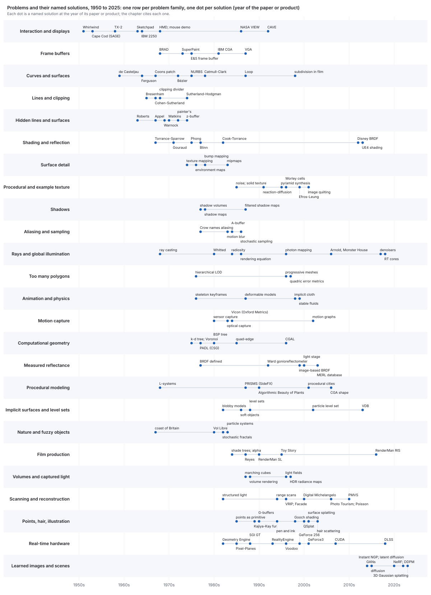
The standard textbook of the 1980s and 1990s defined the field: “Computer graphics concerns the pictorial synthesis of real or imaginary objects from their computer-based models, whereas the related field of image processing (also called picture processing) treats the converse process: the analysis of scenes, or the reconstruction of models of 2D or 3D objects from their pictures” (Foley, van Dam, Feiner and Hughes, Computer Graphics: Principles and Practice, 2nd ed., 1990, p. 2; nearly the same words already appear in Foley and van Dam’s 1982 Fundamentals of Interactive Computer Graphics). The same book called interactive computer graphics “the most important means of producing pictures since the invention of photography and television.” Its third edition (Hughes, van Dam, McGuire, Sklar, Foley, Feiner and Akeley, 2014) widened the definition to include the person at the screen: computer graphics is “the science and art of communicating visually via a computer’s display and its interaction devices.” The field’s society carries both halves in its name: ACM SIGGRAPH, the Association for Computing Machinery’s Special Interest Group on Computer Graphics and Interactive Techniques.
Computer graphics (CG) maps a model to an image. Each neighboring field maps a different input to a different output.
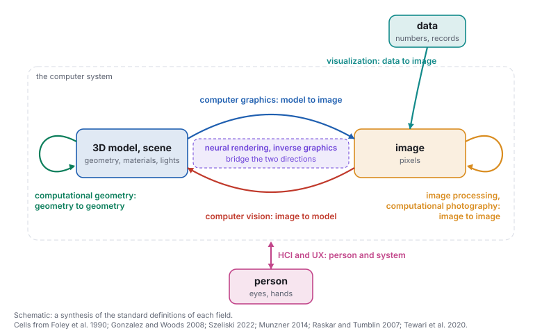
Computer vision runs the arrow backwards. In Szeliski’s words: “In computer vision, we are trying to do the inverse, i.e., to describe the world that we see in one or more images and to reconstruct its properties, such as shape, illumination, and color distributions.” Vision is hard, he writes, “in part, because it is an inverse problem, in which we seek to recover some unknowns given insufficient information to fully specify the solution,” and the forward models vision inverts “are usually developed in physics (radiometry, optics, and sensor design) and in computer graphics” (Szeliski, Computer Vision: Algorithms and Applications, 2nd ed., 2022, sec. 1.1; free PDF from the author). The idea that seeing is the inverse of rendering has a long line in vision research, from the “analysis by synthesis” tradition (Yuille and Kersten, “Vision as Bayesian inference: analysis by synthesis?” 2006) to networks trained as “inverse graphics” (Kulkarni, Whitney, Kohli and Tenenbaum, 2015).
Image processing keeps the image on both sides. Gonzalez and Woods (Digital Image Processing, 3rd ed., 2008, ch. 1) describe a continuum: low-level processes whose inputs and outputs are both images, mid-level image analysis whose outputs are “attributes extracted from those images (e.g., edges, contours, and the identity of individual objects),” and computer vision beyond, with “no clear-cut boundaries in the continuum.” They also note where graphics meets them: 3D modeling “provides an important intersection between image processing and computer graphics and is the basis for many 3-D visualization systems (e.g., flight simulators).”
Visualization takes data that has no shape of its own and gives it one. Munzner’s text (Visualization Analysis and Design, 2014) defines it by its purpose: visual representations of datasets that help people carry out tasks more effectively. The 1987 report to the US National Science Foundation (NSF) that founded scientific visualization as a field, Visualization in Scientific Computing (ViSC; McCormick, DeFanti and Brown), described it as a method of computing that “transforms the symbolic into the geometric” (as quoted in later surveys). Information visualization applies the same idea to abstract data rather than to simulations.
Human-computer interaction (HCI) is “a discipline concerned with the design, evaluation and implementation of interactive computing systems for human use and with the study of major phenomena surrounding them” (Hewett et al., ACM SIGCHI Curricula for Human-Computer Interaction, 1992), and the International Organization for Standardization (ISO) defines user experience (UX) as a “user’s perceptions and responses that result from the use and/or anticipated use of a system, product or service” (ISO 9241-210:2019). Sketchpad (Section 3) belongs to both graphics and HCI.
Computational geometry has two meanings. Preparata and Shamos (Computational Geometry: An Introduction, 1985, sec. 1.1) say the discipline was “christened ‘Computational Geometry’ in a paper by M. I. Shamos (1975)” and set out to recast classical geometry as algorithms; but they also note that the phrase had already been used for spline curve and surface modeling, by Forrest (1971), Bézier (1972) and Riesenfeld (1973), and as the subtitle of Minsky and Papert’s Perceptrons (1969). The first computational geometry was computer-aided design.
Three newer fields overlap graphics. Computational photography “combines plentiful computing, digital sensors, modern optics, actuators, probes and smart lights to escape the limitations of traditional film cameras” (Raskar and Tumblin, 2007). Neural rendering, in the definition of a 2020 Eurographics survey, means “deep image or video generation approaches that enable explicit or implicit control of scene properties such as illumination, camera parameters, pose, geometry, appearance, and semantic structure” and “combines generative machine learning techniques with physical knowledge from computer graphics” (Tewari et al., “State of the Art on Neural Rendering,” 2020). Inverse graphics (above) trains a vision network with a graphics model as its target.
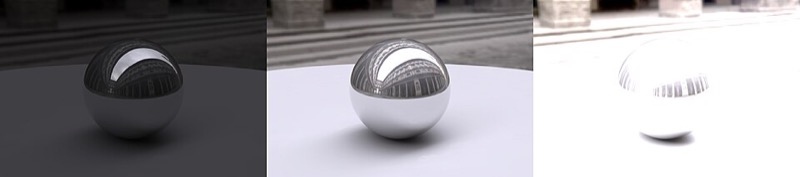
In the ACM Computing Classification System of 2012 (CCS), computer graphics sits under Computing methodologies, with children Animation, Rendering, Image manipulation, Graphics systems and interfaces, Image compression and Shape modeling. Computer vision sits under Artificial intelligence; image processing is filed inside computer graphics, under Image manipulation; visualization belongs to Human-centered computing; computational geometry to the Theory of computation. Three subjects are listed twice: computational photography (under graphics and under vision), virtual and augmented reality (under graphics and under HCI) and scientific visualization (under visualization and under simulation) (ACM CCS 2012). The 2012 tree predates neural rendering and has no node for it.
In this text: the image as a signal is the image-space chapter; the interactive loop is the interactive-systems chapter; vision as the inverse of rendering returns in the learned-scenes chapter.
The first funders of graphics were air defense, aircraft and car design, flight training and film.
Design and manufacturing. Computer-aided design (CAD) is the oldest civil application (Section 3). Boeing describes the 777 as “the first jetliner to be 100 percent digitally designed using three-dimensional computer graphics,” preassembled on the computer, “eliminating the need for a costly, full-scale mock-up”; it entered service with United in June 1995. The software was CATIA; Dassault Systèmes was spun off from Dassault Aviation in 1981, the year CATIA was released and marketed through an agreement with International Business Machines (IBM).
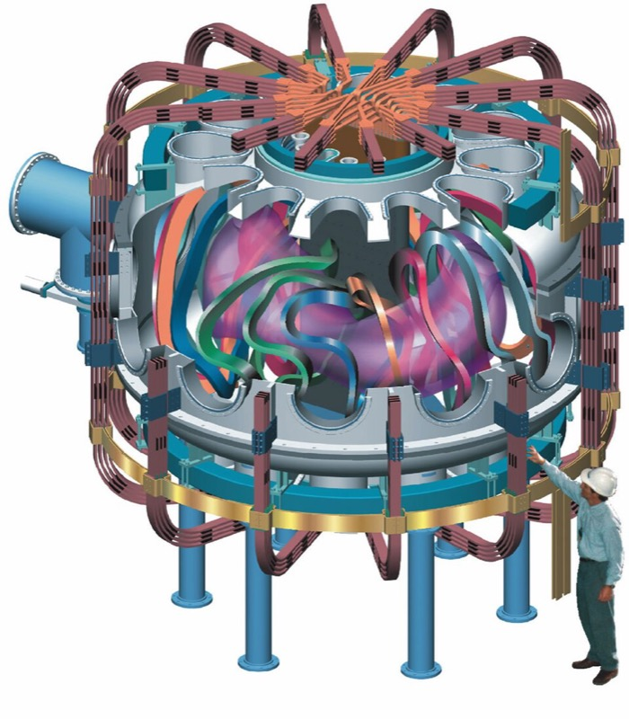
Architecture and construction. Building information modeling (BIM) made the 3D model the legal record of a building. The US General Services Administration (GSA) established its National 3D-4D-BIM Program in 2003 and required a spatial-program BIM for design projects from fiscal year 2007; the UK government’s 2011 construction strategy required “fully collaborative 3D BIM ... as a minimum by 2016”; ISO 19650-1:2018 made the practice an international standard.
Film and visual effects. The Computer History Museum (CHM) dates the first feature-film uses to 1982: Tron, “one of the first movies to use such graphics,” and the Genesis Effect sequence in Star Trek II, “one of the earliest completely computer-generated” film sequences. Young Sherlock Holmes was nominated for the visual-effects Oscar at the 1986 ceremony; Terminator 2 won it at the 1992 ceremony and Jurassic Park at the 1994 one (Academy of Motion Picture Arts and Sciences records).
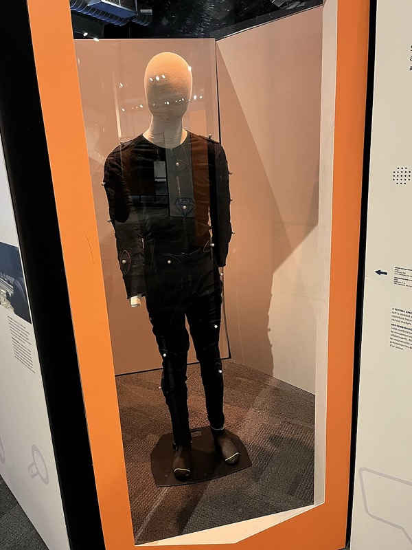
Animation. In the CHM’s words, “feature length computer-animated movies didn’t exist before Pixar made history with its release of Toy Story in 1995.” With Disney, Pixar built software on the Pixar Image Computer (Section 13) to color hand-drawn animation digitally (the Computer Animation Production System, CAPS).
Games. Spacewar!, conceived in 1961 at the Massachusetts Institute of Technology (MIT) and improved in spring 1962, was the first widely distributed computer game (Section 3). Computer Space (1971) put a game in an arcade cabinet, and the CHM notes that NVIDIA’s GeForce 256 (1999) “is often thought of as the first consumer GPU” (graphics processing unit). Games paid for the consumer GPU, and the GPU in turn paid for much of the rest of computing (Section 6).
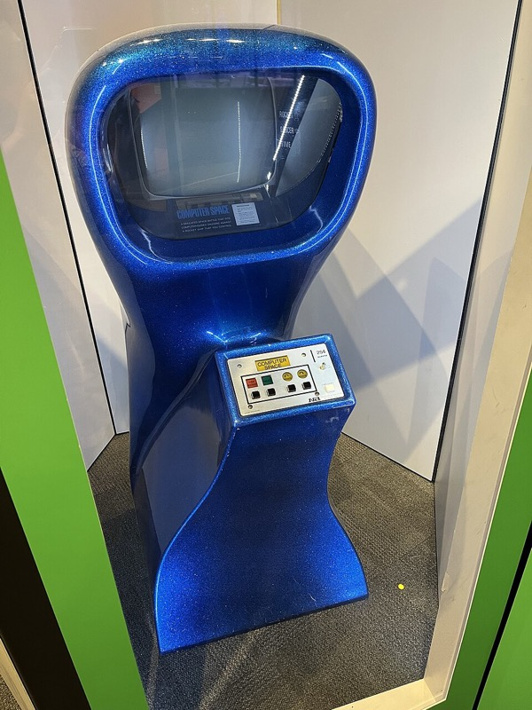
Medicine. Hounsfield described computed tomography (CT) in 1973 (British Journal of Radiology 46:1016); a CT or magnetic resonance imaging (MRI) scan is a 3D grid of scalar values, made visible by rendering. The US National Library of Medicine’s Visible Human data set followed: the male in 1994 (1,871 cross-sections at 1 mm, about 15 GB), the female in 1995 (5,189 images at 0.33 mm, about 40 GB). Marching cubes (1987) and volume rendering (1988) render such grids (Section 6).
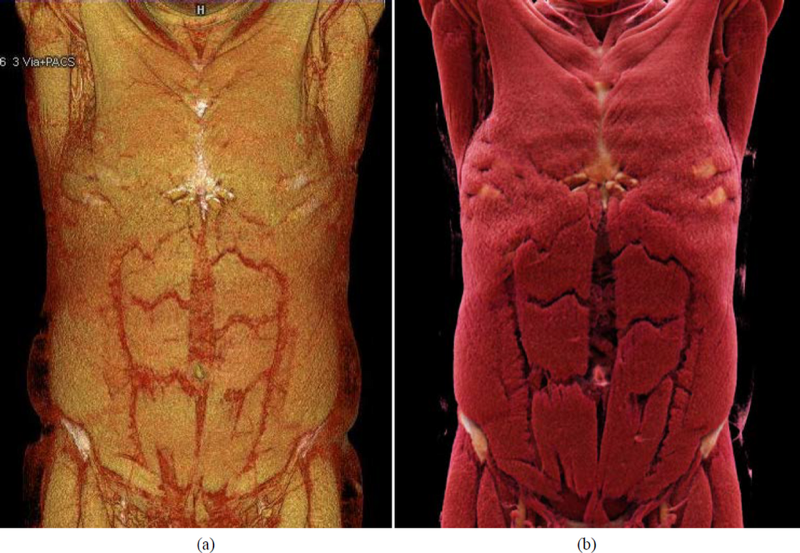
Science. Landmarks besides the ViSC report of 1987: Levinthal’s interactive molecular model-building at MIT (Scientific American, June 1966); the Protein Data Bank, founded at Brookhaven in 1971 with seven structures; the Scientific Visualization Studio of the National Aeronautics and Space Administration (NASA) at the Goddard Space Flight Center, founded by Jim Strong in 1990.
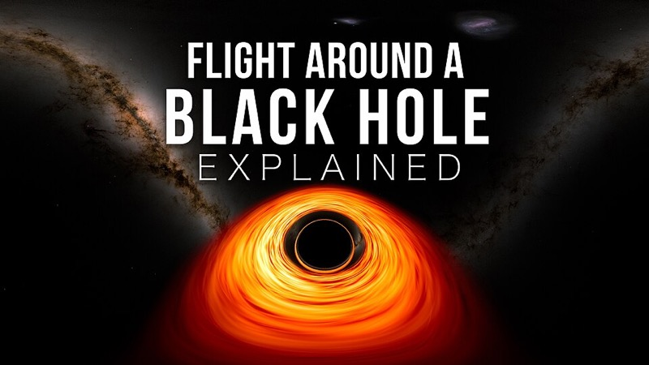
Simulation and training. The flight simulator is older than the computer: the Link trainer dates from 1929, was patented in 1930, and trained more than 500,000 pilots in the Second World War (American Society of Mechanical Engineers (ASME) landmark citation). Its computer successors were the image generators of Evans & Sutherland (E&S), the company founded by David Evans and Ivan Sutherland (Section 13), and networked military simulation followed with the Defense Advanced Research Projects Agency’s SIMNET (Cosby, “SIMNET: an insider’s perspective,” 1995).
Virtual and augmented reality. Sutherland’s head-mounted display of 1968 (Section 3) was followed by NASA Ames’s VIEW system (Fisher et al., 1986) and by the CAVE, a room of projected walls (Cruz-Neira et al., Communications of the ACM (CACM) 1992; SIGGRAPH 1993). The term “augmented reality” appears in print in January 1992, in a Boeing paper by Caudell and Mizell on wiring assembly (25th Hawaii International Conference on System Sciences (HICSS-25)). The market research firm International Data Corporation (IDC) counted about 2.25 million smart glasses shipped in the first quarter of 2026.
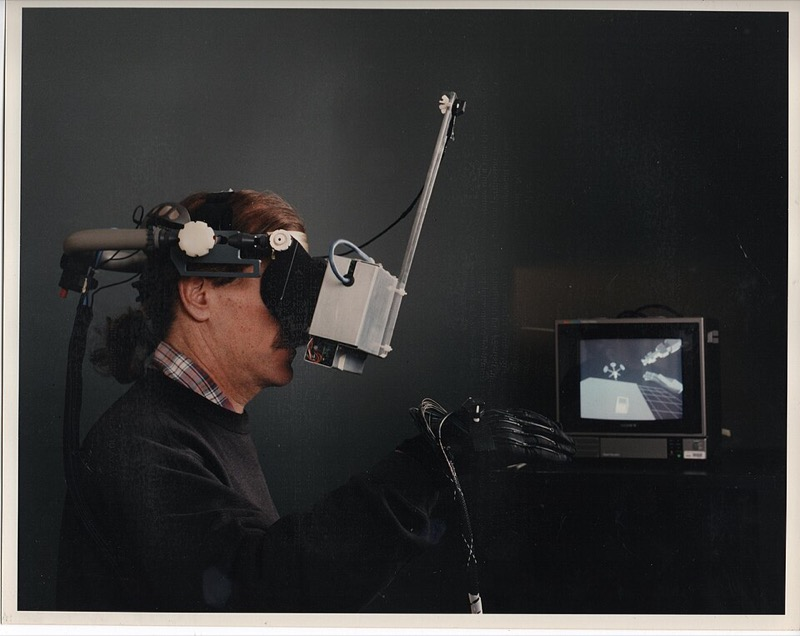
Robots and self-driving cars. Simulators now train and test machines. CARLA, an open driving simulator, was published in 2017 (Dosovitskiy et al.); Waymo reported in April 2020 “over 15 billion miles in simulation”; and frames from a commercial video game, 25,000 of them with pixel labels, were shown to train a street-scene segmenter (Richter et al., “Playing for Data,” 2016).
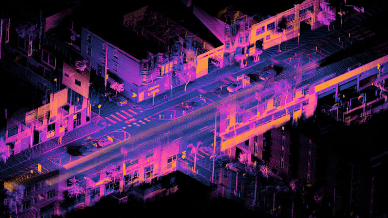
Digital twins, shops, heritage, news, fashion, forensics. NASA’s 2010 technology roadmap defined a digital twin as “an integrated multiphysics, multiscale simulation of a vehicle or system” that mirrors its physical twin; Grieves dates his version of the concept to a 2003 course at the University of Michigan. In 2014 IKEA’s 3D lead said that “around 60-75%” of its product images were computer-generated. Stanford’s Digital Michelangelo Project scanned the David into about two billion polygons of raw data (Levoy et al., SIGGRAPH 2000), and the Smithsonian’s Open Access release of 2020 placed nearly three million 2D and 3D items under a CC0 dedication. Data graphics are older than computers (Playfair’s bar and line charts of 1786; Minard’s map of Napoleon’s march, 1869). Garment software reports the first virtual dressing room in 2000 (Browzwear, self-reported); the US National Institute of Justice surveyed 3D crime-scene scanners in 2016.
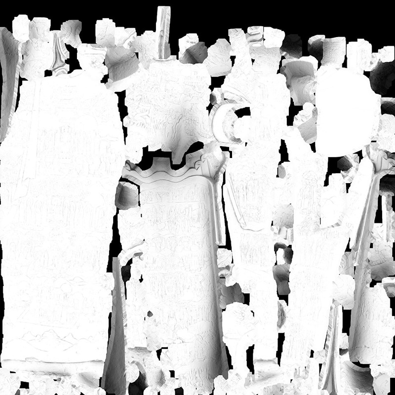
In this text: CAD’s curves and surfaces are the curves chapter; the film and game techniques are spread over the whole text; simulators and their timing are the interactive-systems chapter.
Computer graphics began as the display end of machines built for other purposes. Air defense needed the returns of hundreds of radars fused into aircraft tracks that an operator could see and point at; aircraft makers needed the shape of every part as numbers for machine tools under numerical control (NC); car makers wanted body shapes defined in the computer instead of in clay. Whirlwind, the Semi-Automatic Ground Environment (SAGE) and its light guns, the TX-0 and TX-2, and General Motors’ DAC-1 answered those needs between 1945 and 1962: Earlier machines (1945 to 1962).
Prices in the cost boxes are converted to 2026 dollars: nominal price × 321.943 / CPI-U of the year (US Consumer Price Index for All Urban Consumers, annual averages; 321.943 is the 2025 average), rounded to three significant figures. Further detail on each machine below is in Machines, 1963 to 1972.
The TX-2, an experimental transistor computer that MIT Lincoln Laboratory commissioned in 1958, had a 36-bit word, 65,536 words of core memory and a cathode-ray tube (CRT) display that plotted points under program control, with a light pen (TX-0 and TX-2).
Sketchpad was Ivan Sutherland’s PhD thesis at MIT, run on the TX-2 (Sutherland, Sketchpad: A man-machine graphical communication system, 1963; facsimile as Cambridge Computer Laboratory report UCAM-CL-TR-574; conference version American Federation of Information Processing Societies (AFIPS) Spring Joint Computer Conference 1963). With a light pen and push buttons a person drew on the screen; the drawing was stored as a “ring structure” that recorded its topology; atomic constraints (two lines parallel, two segments equal) were kept true by the machine, which relaxed each constraint’s error; a master drawing could be placed as instances, including “instances within instances,” so that changing the master changed every copy; and a drawn truss bridge could be analyzed for its forces. The thesis dates the work: begun in the fall of 1961, a first light-pen drawing program working in early November 1961, the ring structure in use by February 1962.
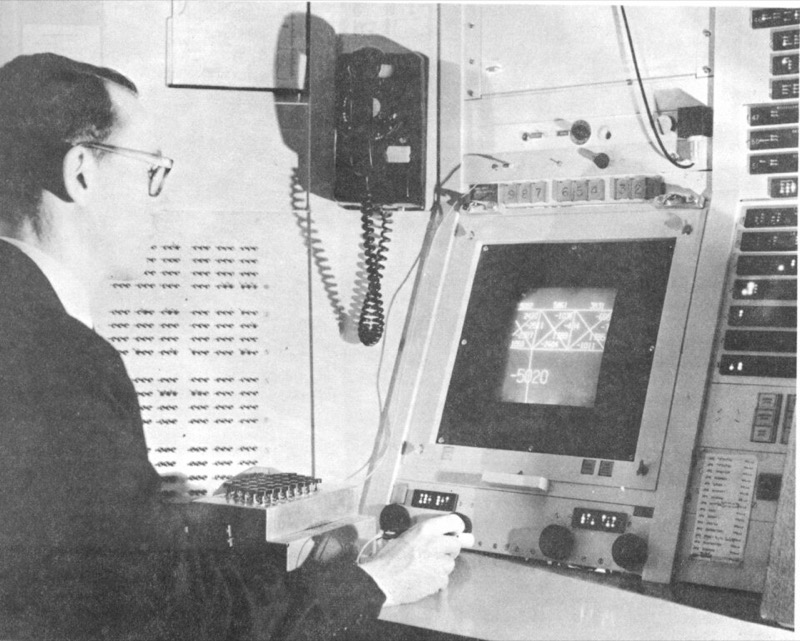
The light pen. Sketchpad’s pen is “a photodiode and transistor preamplifier mounted in the pen housing,” sensitive “only to the bright blue flash of the first intensification of a display spot and not to the dim yellow afterglow.” When the pen sees a spot, the TX-2 interrupts the display sequence, so the program does not have to poll. To follow the pen, Sketchpad redraws a tracking cross “about 100 times per second, taking 1 millisecond per display”; the pen can move at about 20 inches per second before the cross loses it, and losing it is itself used as a command (all from the thesis).
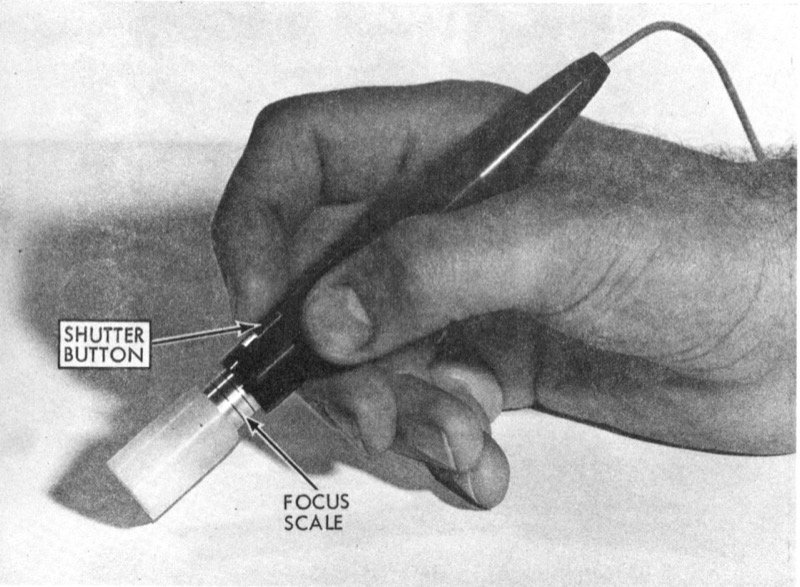
The display file and the flicker budget. The TX-2 display had no memory of its own. Sketchpad kept a display file in core: one spot per 36-bit word, 20 bits of coordinates and 16 bits naming the drawing element that owns the spot, up to 32,000 words, each spot taking 20 µs to show. To refresh 30 times a second without flicker, the display can show \(\tfrac{1}{30}\,\text{s} / 20\,\mu\text{s} \approx 1{,}667\) spots; a full 32,000-spot file takes 0.64 s per pass. Sutherland’s two fixes, both on toggle switches, were to interlace (show every eighth spot per pass) and to show the spots in random order, which “resulted in a twinkling picture ... which is pleasing to the eye and avoids flicker entirely.” He also noted that “a secretary designed and drew an alphabet with the aid of a 10 × 10 raster of points,” and drew the lesson that “now that we know what drawing on a computer is like, much smaller machines can be used for practical applications.”
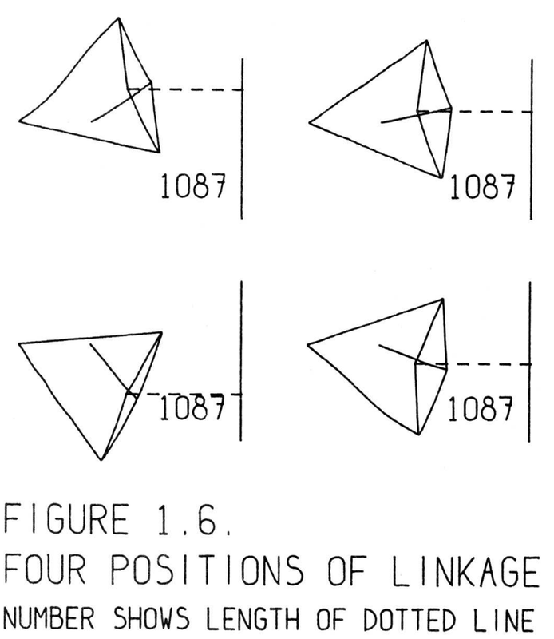
IBM announced the 2250 Display Unit in April 1964 as a peripheral of the System/360: a vector CRT with 1,024 by 1,024 addressable positions that refreshed itself from a local buffer, with a light pen and keyboards. In 1972 Machover called the 2250 series “probably the most widely used graphic terminals over the past five years” (more).
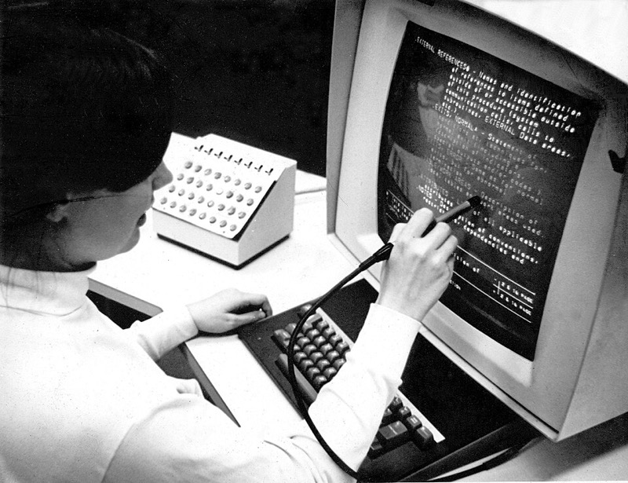
The Digital Equipment Corporation (DEC) delivered its first PDP-1 in 1960: an 18-bit minicomputer with 4,096 words of core, sold with the Type 30, a CRT that plotted random points at 20,000 a second. On the PDP-1 at MIT, Spacewar! was conceived in 1961 and improved in spring 1962 (more).
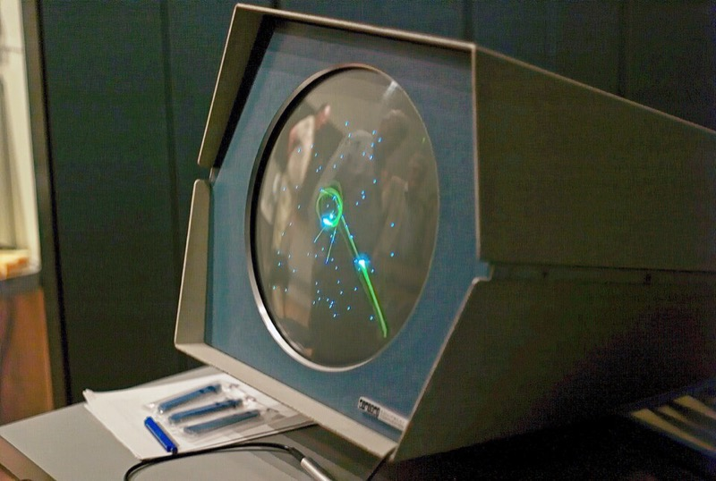
M. R. Davis and T. O. Ellis at the RAND Corporation, under funding from the Advanced Research Projects Agency (ARPA), described the RAND Tablet in 1964 (RAND RM-4122-ARPA), a surface that reported the position of a stylus to the computer. At the Stanford Research Institute (SRI), Douglas Engelbart’s group built NLS (the oN-Line System) and the mouse, two perpendicular wheels driving potentiometers, and showed both to the Fall Joint Computer Conference on 9 December 1968 (Engelbart and English, “A research center for augmenting human intellect,” AFIPS 1968) (more).
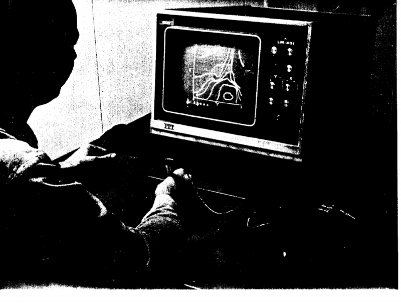
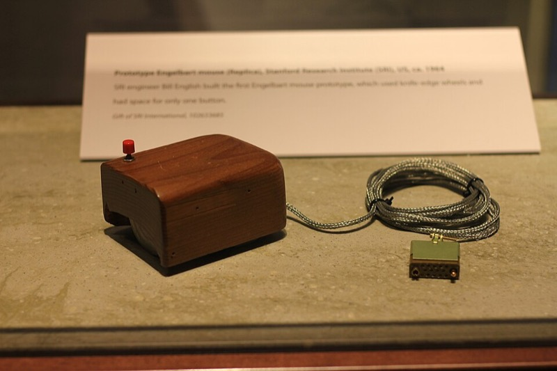
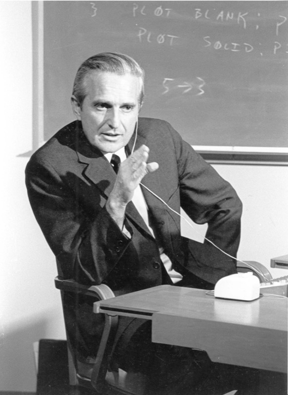
Sutherland’s head-mounted display, built at Harvard with support from ARPA, the Office of Naval Research (ONR) and Bell Telephone Laboratories (Bell Labs), showed the computer’s own drawing in front of the eyes (Sutherland, “A head-mounted three dimensional display,” AFIPS Fall Joint Computer Conference 1968). It was a pipeline of special-purpose units: a matrix multiplier, a clipping divider that also did the perspective division, an analog line generator and two miniature CRTs on a tracked headset, drawing “3000 lines at 30 frames per second.” The paper names the next problem: showing “opaque” objects with hidden lines removed was “beyond our present capability” (Section 4) (more).
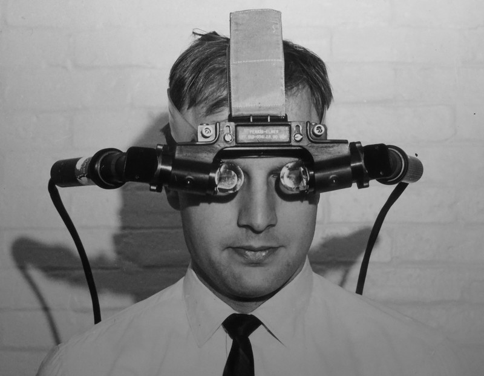
E&S turned the head-mounted display’s pipeline into a product: the Line Drawing System-1 (LDS-1), reported to have shipped first in August 1969, transformed homogeneous vertices by 4 by 4 matrices in hardware to drive a vector display, at “10 microseconds typical for processing each line” (1970 advertisement) (more).
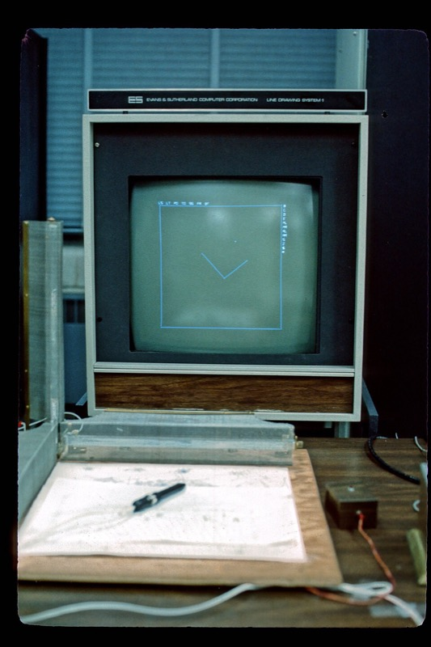
A refreshed display needs memory to refresh from; a storage tube keeps the picture on the screen itself and needs none. Tektronix built terminals on its Model 611 storage tube that Machover says were “originally introduced in the $12,000 to $15,000 range ... now selling for about $8000”; its T4002 of 1969 drew 1,024 by 1,024 on an 11-inch screen for about $10,000 (Weisberg); and the Tektronix 4010, announced in 1971 or 1972 (sources differ), showed 1,024 by 780 for $3,950. A storage tube could not erase one line, only the whole screen.
Memory has fallen in price by a factor of about a billion per bit since the PDP-1, and a whole computer with a graphics processor now costs less than one hour of IBM 2250 console time did in 1972.
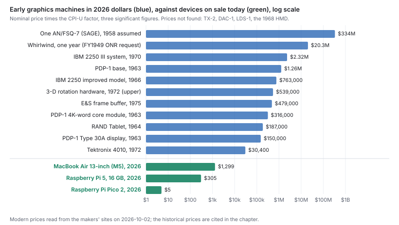
In this text: Sketchpad’s loop and light pen are the interactive-systems chapter; its instances are the scene-graph chapter’s instancing; the head-mounted display’s matrix multiplier and clipping divider are homogeneous transforms, projection and clipping.
Problem. No system let a user create and edit a drawing interactively while the machine maintained its geometric constraints, and a line on a plotter or raster device must be approximated by discrete steps, which 1960s machines could not afford to choose with floating-point arithmetic.
Sketchpad (1963, Ivan Sutherland, MIT, on the TX-2 at Lincoln Laboratory; Section 3): interactive drawing with a light pen, constraints kept by the machine, masters with instances. Bresenham’s line algorithm (1965, Jack Bresenham, IBM) chose the steps of a line with integer additions only (Bresenham, “Algorithm for computer control of a digital plotter,” IBM Systems Journal 4(1), 1965).
Problem. Free-form shapes such as car bodies and aircraft skins had no mathematical representation that numerically controlled machining could use and that a designer could shape through a few control points.
De Casteljau’s curves and algorithm (1959, Paul de Faget de Casteljau, Citroën) were described in internal reports that Citroën kept secret. Bézier curves (Pierre Bézier, Renault) were used in Renault’s UNISURF system and published in his 1972 book Numerical Control: Mathematics and Applications and in a 1971 paper on UNISURF (Proc. Royal Society A 321). B-splines followed, with de Boor’s stable recurrence (1972) and Versprille’s 1975 Syracuse thesis on rational B-splines, the form later called NURBS (non-uniform rational B-splines), which holds both free-form curves and exact conics.
Problem. No efficient general algorithm determined which surfaces are visible from the viewpoint, so solids could be shown only as wireframes with every edge drawn, and shaded images were impossible (the head-mounted display paper called it “beyond our present capability”).
Hidden-line removal for polyhedra (1963, Lawrence Roberts, MIT Lincoln Laboratory) produced the first hidden-line drawings of 3D solids in a thesis that also began computer vision (“Machine perception of three-dimensional solids”). The painter’s algorithm (1972, Martin Newell, Richard Newell and Tom Sancha, at Cambridge) sorted polygons back to front and painted them over each other (“A solution to the hidden surface problem,” ACM Annual Conference 1972).
The z-buffer (1974, Edwin Catmull, Utah) sorts nothing: it keeps a depth for every pixel and lets the nearest surface win, at the price of memory (Catmull, A Subdivision Algorithm for Computer Display of Curved Surfaces, Utah PhD thesis, UTEC-CSc-74-133, 1974). In 1974 the memory was the obstacle: a 512 by 512 depth buffer at 16 bits is 4,194,304 bits, and memory then cost about four cents a bit (the first E&S frame buffer, 256 KB, sold for $80,000 in 1975; Smith, annotations to A Biography of the Pixel), so the depth buffer alone would have cost about $168,000, about $1.1 million in 2026 dollars (Exercise 1).
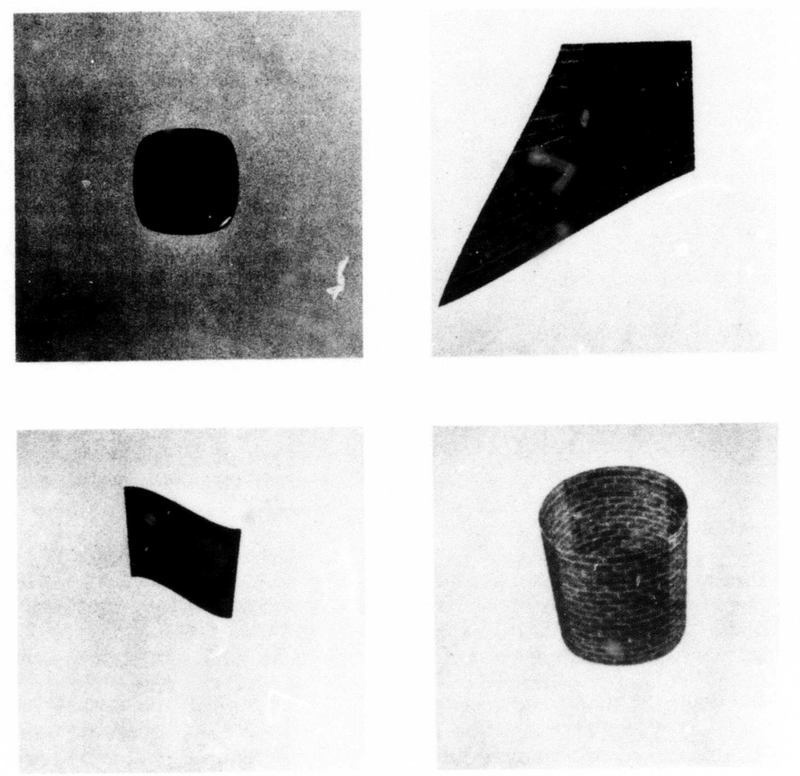
Problem. Lines and polygons extending beyond the viewing window had to be cut at its boundary before display, because off-screen coordinates wrapped around or overloaded the display hardware, and the cut had to keep up with flight simulation.
Cohen-Sutherland line clipping is usually dated 1967 and credited to Danny Cohen and Sutherland. The clipping divider (1968, Robert Sproull and Sutherland) did clipping and the perspective division in hardware, and was part of the head-mounted display (“A clipping divider,” AFIPS Fall Joint Computer Conference 1968). Reentrant polygon clipping (1974, Sutherland and Gary Hodgman) clipped whole polygons plane by plane in a pipeline, and is the algorithm the graphics pipeline still runs (CACM 17(1), 1974).
Problem. One shade per polygon makes the facets of a mesh that approximates a curved surface visible, and a smooth alternative had to be cheap enough to evaluate at every pixel.
Gouraud shading (1971, Henri Gouraud, Utah) interpolated colors computed at the vertices (“Continuous shading of curved surfaces,” IEEE Transactions on Computers C-20(6), 1971). Phong shading and the Phong highlight (1975, Bui Tuong Phong, Utah) interpolated the normal and added a specular highlight (“Illumination for computer generated pictures,” CACM 18(6), 1975).
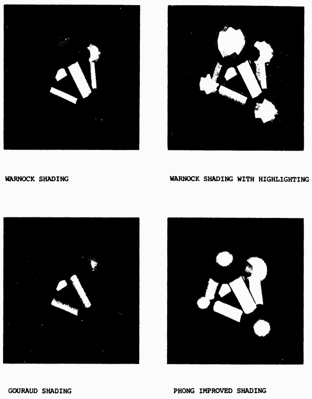
Problem. Fine surface detail (patterns, labels, wrinkles, reflections) modeled as polygons exceeded 1970s memory and time, so it had to be mapped onto surfaces from stored images or functions.
Texture mapping (1974, Catmull, Utah) glued images onto curved patches, in the same thesis as the z-buffer. Bump mapping (1978, Jim Blinn, Utah) made a surface shade as if wrinkled by perturbing its normals, not its geometry (“Simulation of wrinkled surfaces,” SIGGRAPH 1978). Mipmapping (1983, Lance Williams) stored a prefiltered pyramid of each texture so that distant textures stop shimmering (“Pyramidal parametrics,” SIGGRAPH 1983).
Problem. Graphics programs keep asking geometric questions (which objects lie near a point or along a ray, which faces are in front from a viewpoint, how to triangulate scattered points, how to combine two solids), and testing every pair of objects costs time quadratic in the size of the scene.
Computational geometry as a field (1975 to 1978, Michael Shamos, Yale) analyzed such questions as algorithms with proven bounds: convex hulls, closest points and the Voronoi diagram, the partition of the plane into the regions nearest each site, whose dual is the Delaunay triangulation (Shamos and Dan Hoey, “Closest-point problems,” IEEE Symposium on Foundations of Computer Science (FOCS) 1975; Computational Geometry, Yale PhD thesis, 1978; the textbook by Franco Preparata and Shamos, 1985). The quad-edge structure (1985, Leonidas Guibas and Jorge Stolfi, Xerox Palo Alto Research Center (PARC) and Stanford) stored a subdivision and its dual together and computed Delaunay triangulations and Voronoi diagrams with it (ACM Transactions on Graphics (TOG) 4(2), 1985).
The k-d tree (1975, Jon Louis Bentley, Stanford) split space alternately along the coordinate axes for nearest-neighbor and range search (“Multidimensional binary search trees used for associative searching,” CACM 18(9), 1975). The binary space partitioning (BSP) tree (1980, Henry Fuchs, Zvi Kedem and Bruce Naylor, University of Texas at Dallas) precomputed a tree of splitting planes from which polygons can be read back to front for any viewpoint (“On visible surface generation by a priori tree structures,” SIGGRAPH 1980). Constructive solid geometry (CSG) and solid modeling (1977 to 1980, Herbert Voelcker and Aristides Requicha, Production Automation Project, University of Rochester) built solids from primitives by union, intersection and difference, in the PADL (Part and Assembly Description Language) system (Computer 10(12), 1977), with Requicha’s theory of solid representations (ACM Computing Surveys 12(4), 1980). CGAL, the Computational Geometry Algorithms Library, collected exact implementations of these algorithms from 1996 (“The CGAL kernel,” 1996).
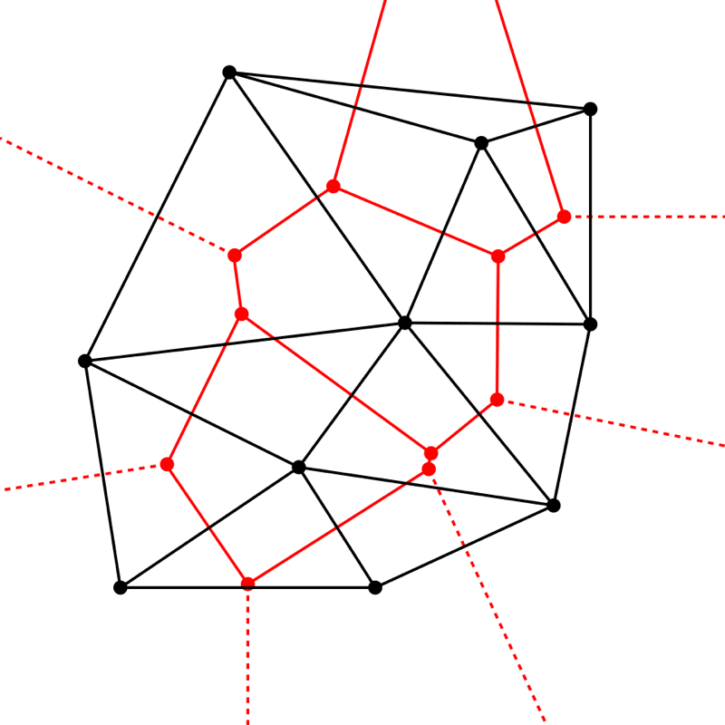
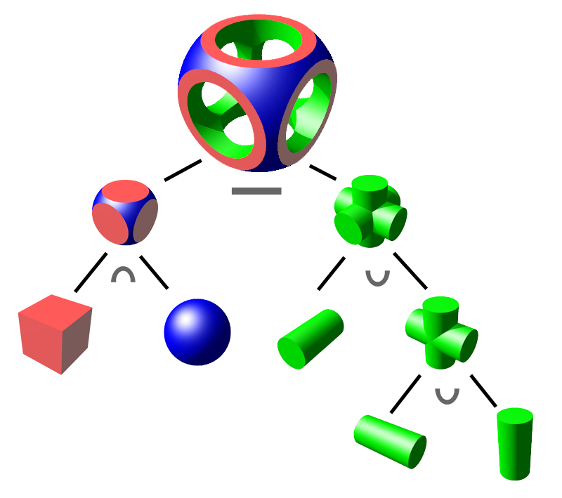
Problem. Scenes held more polygons than could be drawn in one frame time, so distant objects needed fewer polygons without visible popping between levels, and dense scanned meshes needed simplification.
Hierarchical models and level of detail (LOD) (1976, Jim Clark) organized a scene as a hierarchy of bounding volumes with detail chosen by screen size (“Hierarchical geometric models for visible surface algorithms,” CACM 19(10), 1976). Scanned meshes (Section 6) later brought progressive meshes (1996, Hugues Hoppe, Microsoft Research), one mesh that streams as a continuous sequence of detail levels (SIGGRAPH 1996), and quadric error metrics (1997, Michael Garland and Paul Heckbert, Carnegie Mellon University (CMU)), the standard cost for edge-collapse simplification (SIGGRAPH 1997).
Problem. Specifying every vertex of a deforming body in every frame is infeasible, so motion had to be controlled by a few parameters, the joint angles of a skeleton that drives the skin.
Skeleton-driven keyframing (1976, Nestor Burtnyk and Marceli Wein) (CACM 19(10)) and skinning by joint-dependent local deformation (1988, Nadia Magnenat-Thalmann, Richard Laperrière and Daniel Thalmann, Graphics Interface ’88).
Problem. Keyframed human motion looks mechanical because the timing and weight shifts of a real body are too subtle to specify by hand, so the motion had to be measured from a performer and turned into joint angles that drive a skeleton.
Two precursors came from photography and film. Sequential photographs (1878, Eadweard Muybridge, for Leland Stanford) recorded a galloping horse in a row of exposures (The Horse in Motion, Library of Congress). The rotoscope (Max Fleischer; patent filed 1915, granted 9 October 1917) projected filmed live action frame by frame so that an animator could trace it (US patent 1,242,674).
Sensor capture for computer animation (1980 and 1982, Tom Calvert and colleagues, Simon Fraser University) recorded a dancer’s joint angles with sensors worn on the body (SIGGRAPH 1980, IEEE Computer Graphics and Applications (CG&A) 1982). Optical marker systems triangulated reflective markers seen by several cameras; Vicon, the best known, sold its first system in 1979 and began trading in 1984, when a management buyout made Oxford Dynamics into Oxford Metrics (Vicon company history). Motion graphs (2002, Lucas Kovar, Michael Gleicher and Frédéric Pighin, University of Wisconsin-Madison and University of Southern California) cut captured clips at similar poses and joined them into new motion (SIGGRAPH 2002).
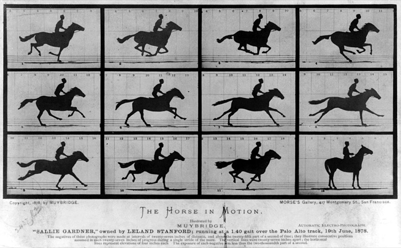
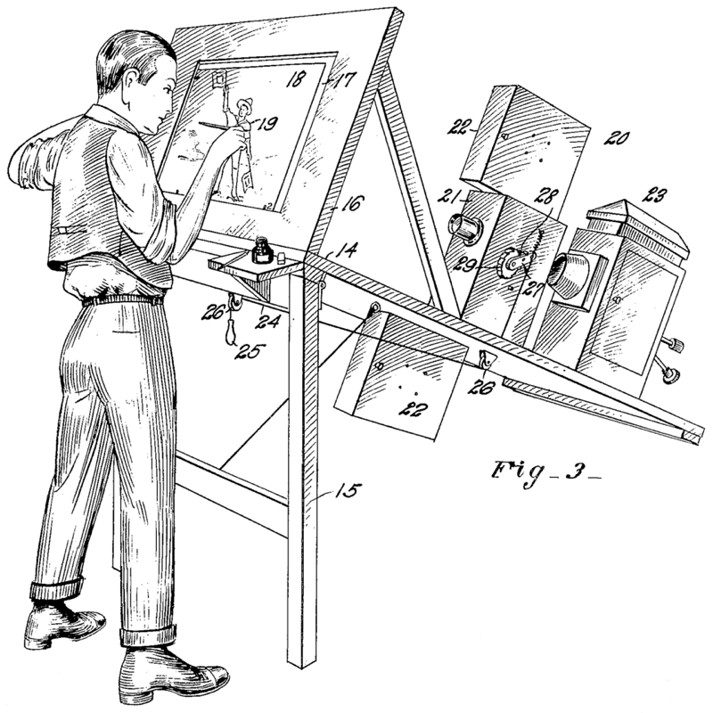
Problem. Phong’s highlight is an empirical function, not derived from surface physics, so it could not make metals and plastics look like their materials or be tied to measured reflectance.
Microfacet theory (1967, Kenneth Torrance and Ephraim Sparrow) treated a rough surface as a distribution of tiny mirrors, in optics, not graphics (Journal of the Optical Society of America (JOSA) 57(9), 1967). Blinn’s reflection models (1977, Blinn, Utah) brought Torrance-Sparrow into graphics, with the half-vector highlight most engines compute (SIGGRAPH 1977). The Cook-Torrance model (1982, Robert Cook and Torrance, Cornell) completed the import, with a Fresnel color shift, in the first issue of the new ACM Transactions on Graphics (“A reflectance model for computer graphics,” TOG 1(1), 1982).
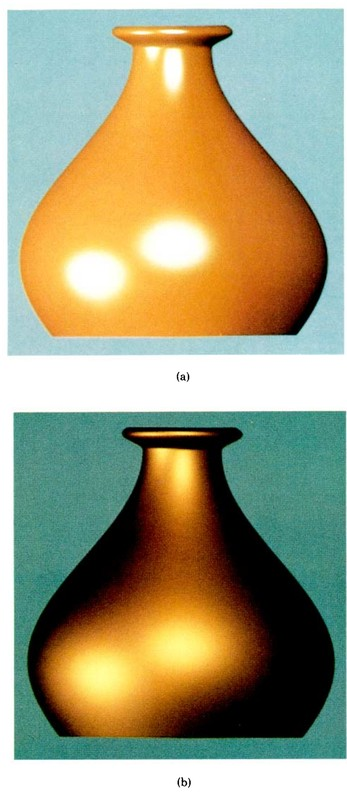
Problem. Analytic reflection models have a few parameters, and nothing tied those parameters to a real material without measuring how the material scatters light from every incoming to every outgoing direction, a four-dimensional function.
The bidirectional reflectance distribution function (BRDF) (1977, Fred Nicodemus and colleagues, National Bureau of Standards (NBS), now the National Institute of Standards and Technology (NIST)) was defined as the ratio of reflected radiance to incident irradiance for each pair of directions (“Geometrical considerations and nomenclature for reflectance,” NBS Monograph 160, 1977). A gonioreflectometer measures it by moving a light and a detector around a sample; Greg Ward (Lawrence Berkeley Laboratory) built an imaging one and fit an anisotropic model to its data (“Measuring and modeling anisotropic reflection,” SIGGRAPH 1992). Image-based measurement (1999, Stephen Marschner, Stephen Westin, Eric Lafortune, Kenneth Torrance and Donald Greenberg, Cornell) photographed a curved sample under one light, so each image recorded many angles at once (“Image-based BRDF measurement including human skin,” Eurographics Rendering Workshop 1999).
The MERL BRDF database (2003, Wojciech Matusik, Hanspeter Pfister, Matthew Brand and Leonard McMillan, MIT and Mitsubishi Electric Research Laboratories (MERL)) represented each isotropic material by a dense table of measurements; the published database holds 100 materials (MERL; “A data-driven reflectance model,” ACM TOG 22(3), 2003). The light stage (2000, Paul Debevec and colleagues) photographed a face under a light moved over the whole sphere of directions and relit it from the images (“Acquiring the reflectance field of a human face,” SIGGRAPH 2000).
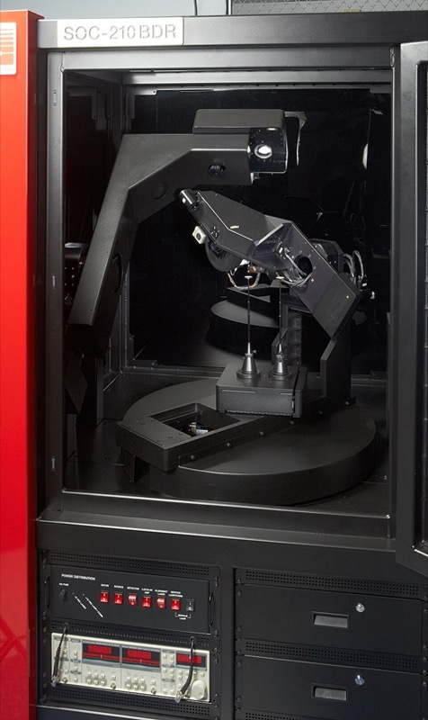
Problem. Local shading does not test whether a point is visible from the light, so objects cast no shadows and appear to float; the visibility test had to be cheap enough for a scan-line renderer.
Shadow volumes (1977, Frank Crow) represented shadowed regions as polygonal volumes, in a paper that also surveyed shadow algorithms (SIGGRAPH 1977). Shadow maps (1978, Lance Williams) rendered depth from the light and compared it per pixel (“Casting curved shadows on curved surfaces,” SIGGRAPH 1978). Percentage-closer filtering (1987, William Reeves, David Salesin and Cook, Pixar) softened shadow-map edges for film (SIGGRAPH 1987).
Problem. One point sample per pixel undersamples edges, textures and motion, which produces stair-stepped edges, crawling textures and strobing.
Aliasing diagnosed (1977, Crow): the paper borrowed the term from sampling theory and gave filtering as the cure (“The aliasing problem in computer-generated shaded images,” CACM 20(11), 1977). The A-buffer (1984, Loren Carpenter, Lucasfilm) kept subpixel coverage masks with hidden-surface removal (SIGGRAPH 1984). Stochastic sampling (1986, Cook, Pixar) jittered samples so that aliasing turns into noise (ACM TOG 5(1), 1986).
Problem. Terrain, coastlines and clouds have irregular detail at every scale, too much to model by hand, so it had to be generated.
Fractal geometry (Benoit Mandelbrot) gave a mathematics of self-similar shapes, in books of 1977 (Fractals: Form, Chance and Dimension) and 1982 (The Fractal Geometry of Nature). Stochastic fractal rendering (1982, Alain Fournier, Don Fussell and Carpenter) built terrain by subdivision with random displacement (“Computer rendering of stochastic models,” CACM 25(6), 1982).
Problem. Plants, buildings and cities contain thousands of similar but not identical parts, too many to model by hand and too structured for random displacement (above), so they had to be generated by rules that encode how the parts grow or are assembled.
L-systems (1968, Aristid Lindenmayer, a biologist) described the growth of simple organisms by rewriting strings of symbols in parallel (Journal of Theoretical Biology 18(3), 1968). Przemyslaw Prusinkiewicz (University of Regina), with Lindenmayer and James Hanan, read the strings as turtle-graphics commands to model developing plants (SIGGRAPH 1988), and with Lindenmayer wrote The Algorithmic Beauty of Plants (Springer, 1990; free copy). Shape grammars (George Stiny and James Gips) rewrote shapes instead of strings, for painting, sculpture and architecture (Stiny, 1975).
Procedural cities (2001, Yoav Parish and Pascal Müller, ETH Zurich) grew street networks with an extended L-system and filled the lots with buildings (“Procedural modeling of cities,” SIGGRAPH 2001). CGA shape (computer generated architecture; 2006, Müller, Peter Wonka, Simon Haegler, Andreas Ulmer and Luc Van Gool, ETH Zurich and Arizona State University) was a shape grammar that split building masses into floors, façade tiles and windows (“Procedural modeling of buildings,” ACM TOG 25(3), 2006). Houdini (SideFX) grew from PRISMS, the procedural application that Kim Davidson and Greg Hermanovic released when they founded the company in 1987 (SideFX).
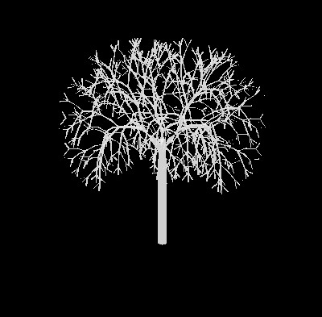
Problem. Tensor-product spline patches need a rectangular control grid, so surfaces of arbitrary topology (characters, organic shapes) had to be stitched from patches whose seams crack when animated.
Catmull-Clark subdivision (1978, Catmull and Clark) made smooth surfaces from any quadrilateral cage (Computer-Aided Design 10(6), 1978). Loop subdivision (1987, Charles Loop, Utah master’s thesis) did the same for triangle meshes. Subdivision in production (1998, Tony DeRose, Michael Kass and Tien Truong, Pixar) added creases and textures and used them in the 1997 short Geri’s Game (SIGGRAPH 1998).
Problem. Local shading evaluates a surface point from the light sources alone, ignoring the rest of the scene, so it cannot compute cast shadows, mirror reflection or refraction.
Ray casting for shading (1968, Arthur Appel, IBM) sent rays from the eye, with shadow tests, to shade line drawings (AFIPS Spring Joint Computer Conference 1968). Recursive ray tracing (1980, Turner Whitted, Bell Labs) produced shadows, reflection and refraction from one recursive algorithm (“An improved illumination model for shaded display,” CACM 23(6), 1980). The paper gives its own times: 44, 74 and 122 minutes for its three pictures on a VAX-11/780, at 480 by 640 pixels; the 74-minute picture shows spheres over a checkerboard. Distributed ray tracing (1984, Cook, Thomas Porter and Carpenter, Lucasfilm) spread rays over the lens, the light, the shutter interval and the reflection lobe to produce depth of field, soft shadows, motion blur and glossy reflection (SIGGRAPH 1984).
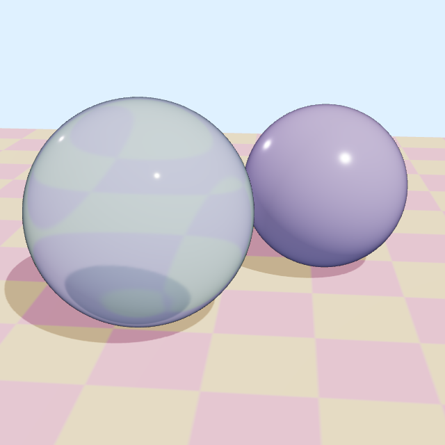
A vector display draws lines from a list and cannot fill an area. A raster display scans a grid of pixels every refresh and can show filled areas, but needs memory for the whole image. For its first decade that memory was the most expensive part of a raster system.
Before RAM, 1968 to 1973. The Brookhaven Raster Display (BRAD) of 1968 kept a 512 by 512 picture at 2 bits a pixel on drum tracks, not in random-access memory (RAM), for an initial system cost of $50,000, $463,000 in 2026 dollars (Smith’s annotations, summarizing the 1968 CACM paper). At Xerox’s Palo Alto Research Center (PARC), Richard Shoup’s SuperPaint went online in April 1973 with a 640 by 486 by 8-bit frame buffer built from shift registers, which he chose over Intel’s 1103 dynamic RAM (DRAM) for density and cost; a second 8-bit buffer was “deemed too expensive” (Shoup, “SuperPaint: an early frame buffer graphics system,” IEEE Annals of the History of Computing 23(2), 2001). The same laboratory’s Alto (1973) put a 606 by 808 one-bit bitmap display in its main memory: 61,206 bytes, 46.7% of the base 128 KB.
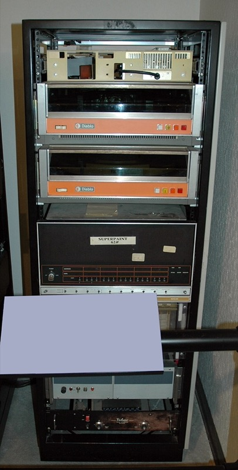
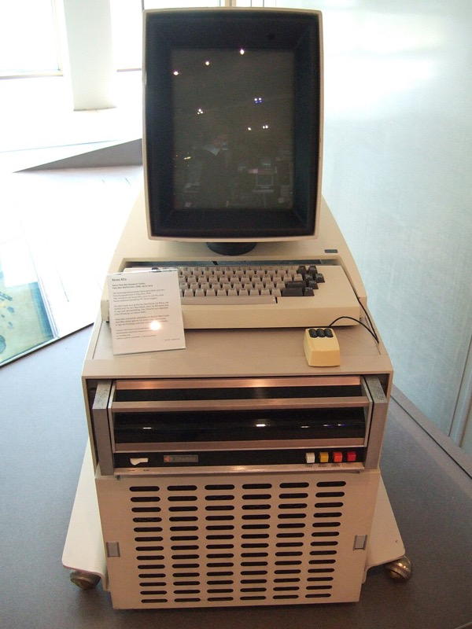
The first RAM frame buffer product, 1975. Evans & Sutherland’s frame buffer, designed by Sutherland, James Kajiya, Demos and Cheadle, held 512 by 512 pixels at 8 bits. Alvy Ray Smith, who used it, writes that “the price of that first RAM framebuffer product was $80,000 for 512 by 512 pixels, eight bits each”; the New York Institute of Technology (NYIT) bought five more at $60,000 each, and about 1977 combined three of them into the first 24-bit frame buffer, for which Smith wrote the paint program Paint3 (Smith, annotations to A Biography of the Pixel, 2023; Smith, “Digital paint systems,” 2001).
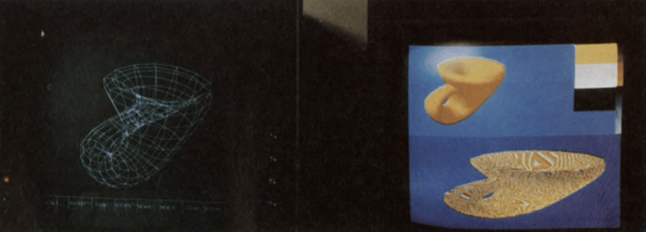
A market, 1976 to 1981. By 1976 there were about 2,000 “high-cost ($50,000 and up)” graphics terminals in the US and 10,000 to 15,000 “low-cost ($10,000 and under)”; the Tektronix 4006-1 storage-tube terminal sold for $2,995 (Electronic Design, June 1976). A 1980 NASA survey of raster vendors priced a Genisco GCT-3000 with 1 MB at about $50,000, a typical Ikonas system at $56,500 and a maximal Ramtek 9400 at $87,000; a 1981 Air Force survey found an AED 512 configuration “under $13,000” and six recommended 512 by 512 systems from $19,820 to $53,100 (both).
Into the personal computer (PC), 1981 to 1987. IBM’s Color/Graphics Monitor Adapter (CGA), announced on 12 August 1981, carried 16 KB for $300. The Macintosh of 1984 cost $2,495 and kept its 512 by 342 one-bit bitmap in 21,888 bytes of its 128 KB. The Enhanced Graphics Adapter (EGA) of 1984 cost $524 with 64 KB and $982 with 256 KB; IBM’s first Video Graphics Array (VGA) card, the PS/2 Display Adapter, cost $595 (reportedly in 1987).
The card with a processor, 1996 to 2025. From the mid-1990s the frame buffer is part of a graphics card whose price also buys the processor (Section 6). The 3dfx Voodoo card of 1996 had 4 MB for $299; a GeForce 256 card of 1999, 32 MB for $349.99; a GeForce 8800 GTX of 2006, 768 MB for $599; the GeForce RTX 2080 of 2018, 8 GB for $699; the RTX 4090 of 2022, 24 GB for $1,599; the RTX 5090 of 2025, 32 GB for $1,999, which is 6.1 cents a megabyte with the processor included.
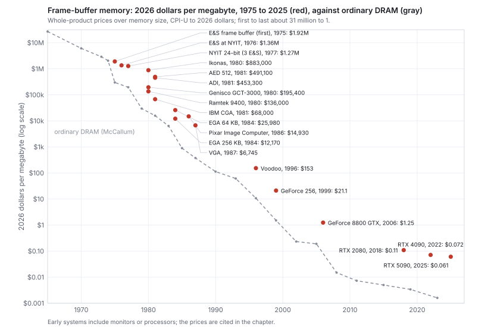
In this text: the frame buffer, double buffering and the depth buffer are the rasterization chapter; bits per pixel and color maps are the color chapter.
Affordable frame buffers opened the problems of the 1980s to three groups: hardware companies selling raster systems, film studios that could afford computed frames, and university laboratories that treated rendering as physics.
Problem. General-purpose processors could not transform, clip and rasterize thousands of shaded polygons per frame at interactive rates, so the pipeline stages had to be built as special-purpose hardware.
The Geometry Engine (1982, Jim Clark, Stanford) put transformation and clipping on a custom very-large-scale integration (VLSI) chip (“The Geometry Engine: a VLSI geometry system for graphics,” SIGGRAPH 1982), and Silicon Graphics (SGI) was founded around it; its first product, the IRIS 1000 terminal, reportedly shipped in November 1983. Edge-function rasterization (1988, Juan Pineda) gave the rasterizer the parallel form graphics processors use (“A parallel algorithm for polygon rasterization,” SIGGRAPH 1988). The RealityEngine (1993, Kurt Akeley, SGI) rendered textured, antialiased triangles in real time in one system, with hardware multisampling (SIGGRAPH 1993). Their architectures are in Section 7.
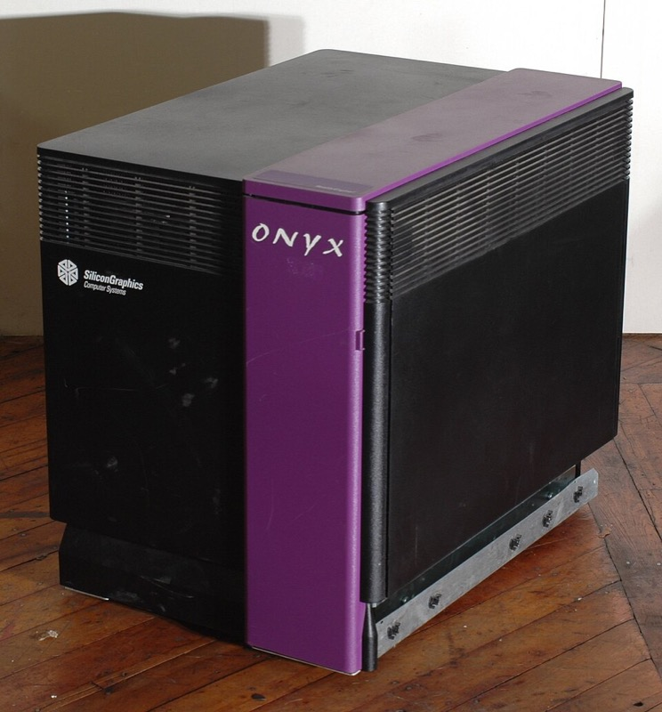
Problem. Phenomena without well-defined surfaces (fire, sparks, smoke, spray) cannot be represented by polygon meshes.
Particle systems (1983, William Reeves, Lucasfilm) modeled them as clouds of short-lived points governed by stochastic rules (“Particle systems: a technique for modeling a class of fuzzy objects,” ACM TOG 2(2), 1983).
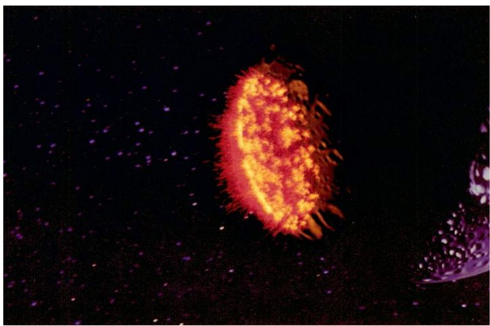
Problem. Meshes and patches represent a surface by its boundary, so shapes that blend, merge or split (molecules, soft bodies, splashing liquid) need their connectivity rebuilt at every change; a surface defined as the zero set of a function \(f(\mathbf{x}) = 0\) changes topology for free, but it has to be stored, moved and rendered.
Blobby models (1982, Jim Blinn, Jet Propulsion Laboratory) summed Gaussian density fields around atoms and drew the surface where the sum crosses a threshold (“A generalization of algebraic surface drawing,” ACM TOG 1(3), 1982). Soft objects (1986, Geoff Wyvill, Craig McPheeters and Brian Wyvill) used fields of finite radius, so each point depends only on nearby sources, and polygonized them on a grid (“Data structure for soft objects,” The Visual Computer 2(4), 1986); such fields are now usually called metaballs.
The level set method (1988, Stanley Osher and James Sethian, University of California, Los Angeles (UCLA) and University of California (UC) Berkeley) moved a front by evolving a function whose zero set is the front, so the front merges and splits without special cases (Journal of Computational Physics 79(1), 1988). Graphics adopted it for liquids: level sets with particles (2001, Nick Foster and Ronald Fedkiw, Pacific Data Images (PDI)/DreamWorks and Stanford; SIGGRAPH 2001) and the particle level set (2002, Douglas Enright, Stephen Marschner and Fedkiw, Stanford and Industrial Light & Magic), which corrected the front with marker particles so thin sheets of water stop vanishing (ACM TOG 21(3), 2002). VDB (2013, Ken Museth, DreamWorks Animation) stored such fields and smoke densities in a sparse hierarchical grid, released as the OpenVDB library (ACM TOG 32(3), 2013).
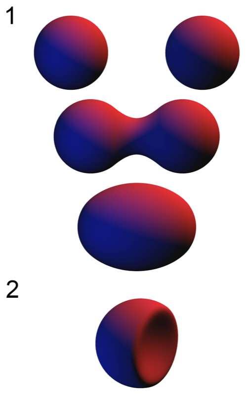
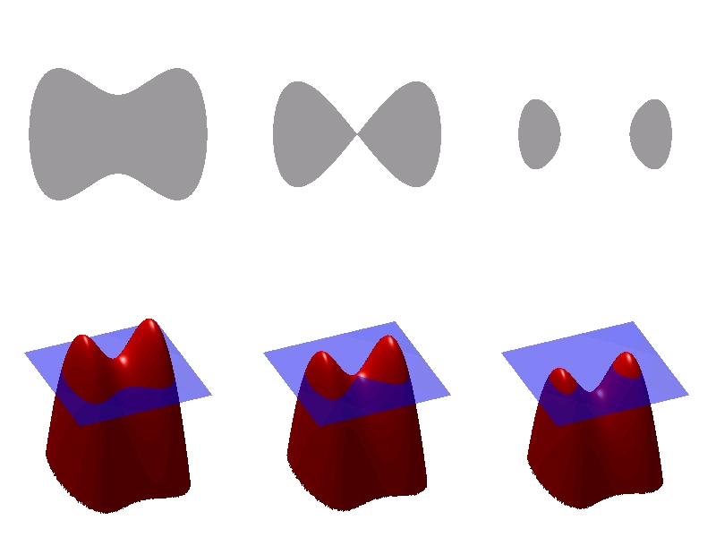
Problem. Effects shots combine separately rendered layers, and pixels that an element covers only partly had to be combined without edge fringes, which needs a per-pixel coverage value and a consistent algebra of compositing operators.
Alpha compositing and the over operator (1984, Thomas Porter and Tom Duff, Lucasfilm) defined the compositing algebra, with premultiplied alpha, that window systems, games and film all use (“Compositing digital images,” SIGGRAPH 1984).
Problem. Neither local shading nor Whitted ray tracing computes indirect illumination, light reflected between diffuse surfaces (interreflection), which produces the soft indirect light and color bleeding that dominate interiors.
Radiosity (1984, Cindy Goral, Kenneth Torrance, Donald Greenberg and Bennett Battaile, Cornell Program of Computer Graphics) applied the energy balance of radiative heat transfer to lighting (“Modeling the interaction of light between diffuse surfaces,” SIGGRAPH 1984). The hemicube (1985, Michael Cohen and Greenberg) computed its form factors with z-buffer hardware (SIGGRAPH 1985); progressive refinement (1988, Cohen, Shenchang Chen, John Wallace and Greenberg) made it viewable while it converged (SIGGRAPH 1988).
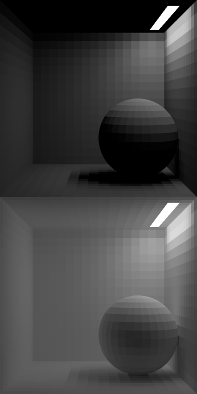
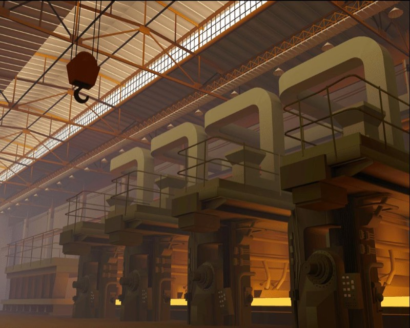
Problem. Image textures have finite resolution and extent, so they repeat, stretch and run out, and they cannot fill a volume; marble, wood and clouds needed patterns computed as functions of position in space, and a small photograph of a material had to be extended to any size without visible seams or repetition.
Perlin noise and a procedural shading language (1985, Ken Perlin) gave controlled randomness for natural textures (“An image synthesizer,” SIGGRAPH 1985). Solid texturing (1985, Darwyn Peachey) defined the pattern throughout 3D space (SIGGRAPH 1985), so an object carved from it shows the pattern on every cut. Reaction-diffusion textures (1991) grew spots and stripes from simulated chemical reactions, on a mesh by Greg Turk at the University of North Carolina (UNC) (SIGGRAPH 1991) and on a grid by Andrew Witkin and Michael Kass (SIGGRAPH 1991). Cellular texture: Kurt Fleischer, David Laidlaw, Bena Currin and Alan Barr (Caltech) grew scales and thorns from simulated cells on a surface (“Cellular texture generation,” SIGGRAPH 1995), and Steven Worley’s basis function returned the distances to the nearest scattered feature points, a Voronoi pattern of cells like stone or scales (“A cellular texture basis function,” SIGGRAPH 1996).
Texture synthesis from examples made more of a sample texture. David Heeger and James Bergen matched the histograms of an image pyramid (SIGGRAPH 1995); Alexei Efros and Thomas Leung (UC Berkeley) grew the output one pixel at a time by copying the pixel whose neighborhood best matched in the sample (International Conference on Computer Vision (ICCV) 1999); Li-Yi Wei and Marc Levoy (Stanford) made that search fast with tree-structured vector quantization (SIGGRAPH 2000); and image quilting (2001, Efros and William Freeman) copied whole patches and cut minimum-error seams between them (SIGGRAPH 2001).
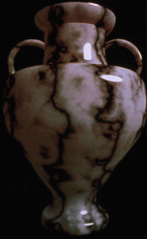
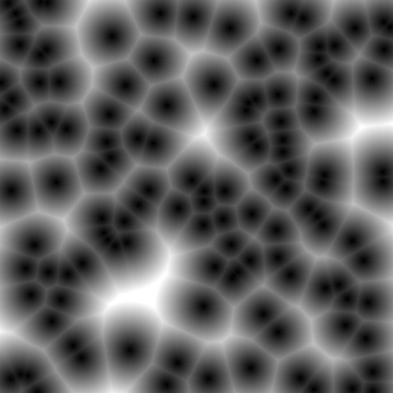
Problem. When a model has more triangles than the image has pixels, as dense scans do, each triangle covers less than a pixel and its connectivity is wasted work, but bare points leave holes between samples and alias when minified.
Points as a display primitive (1985, Marc Levoy and Turner Whitted, UNC) proposed rendering surfaces from points alone, with each point spread over a small screen footprint (“The use of points as a display primitive,” UNC TR 85-022). QSplat (2000, Szymon Rusinkiewicz and Levoy, Stanford) drew the Digital Michelangelo scans interactively from a hierarchy of bounding spheres (SIGGRAPH 2000). Surface splatting (2001, Matthias Zwicker, Hanspeter Pfister, Jeroen van Baar and Markus Gross, ETH Zurich and MERL) drew each point as an elliptical Gaussian filtered in screen space, which removed holes and aliasing (SIGGRAPH 2001); 3D Gaussian splatting (2023, Section 11) projects its Gaussians the same way.
Problem. Ray tracing handled specular paths and radiosity diffuse interreflection, but global illumination had no general formulation and no estimator that covered all light paths.
The rendering equation and path tracing (1986, James Kajiya, California Institute of Technology (Caltech)) wrote all of light transport as one integral equation and estimated it by following random paths (“The rendering equation,” SIGGRAPH 1986). The estimators followed: multiple importance sampling (1995, Eric Veach and Leonidas Guibas, Stanford; SIGGRAPH 1995) and photon mapping (1996, Henrik Wann Jensen; Eurographics Rendering Workshop 1996). The Eurographics Rendering Workshop is now the Eurographics Symposium on Rendering (EGSR).
Problem. A feature film needs well over a hundred thousand frames of complex scenes with motion blur, displacement and custom materials, and 1980s renderers could neither fit such scenes in memory nor let artists program materials.
Shade trees (1984, Cook, Lucasfilm) made materials user-built expression trees (SIGGRAPH 1984). The Reyes architecture (1987, Cook, Carpenter and Catmull, Lucasfilm then Pixar) diced every surface into micropolygons smaller than a pixel and streamed film-scale scenes through memory (“The Reyes image rendering architecture,” SIGGRAPH 1987). Pixar’s RenderMan Interface, a scene-description standard between modelers and renderers, and the RenderMan Shading Language (1990, Pat Hanrahan and Jim Lawson, Pixar; SIGGRAPH 1990) followed.
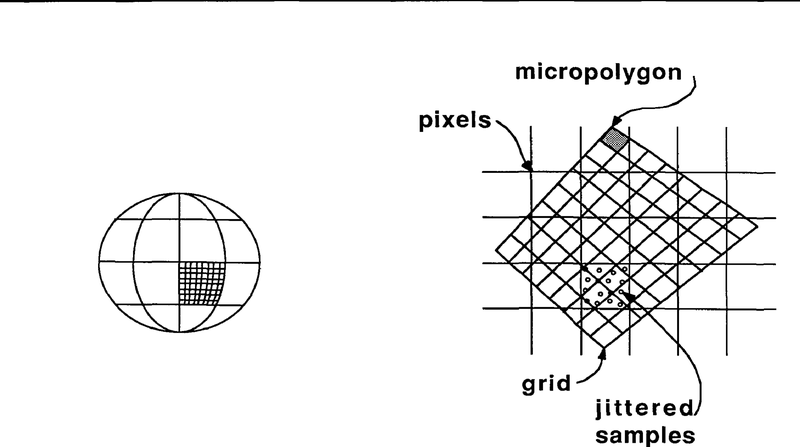
Problem. Cloth, collisions, smoke and water cannot be keyframed convincingly by hand, and numerical simulation of them was unstable or too slow at the time steps production needs.
Elastically deformable models (1987, Demetri Terzopoulos, John Platt, Alan Barr and Kurt Fleischer; SIGGRAPH 1987); implicit cloth with large stable steps (1998, David Baraff and Andrew Witkin; SIGGRAPH 1998); and stable fluids (1999, Jos Stam, Alias|Wavefront; SIGGRAPH 1999).
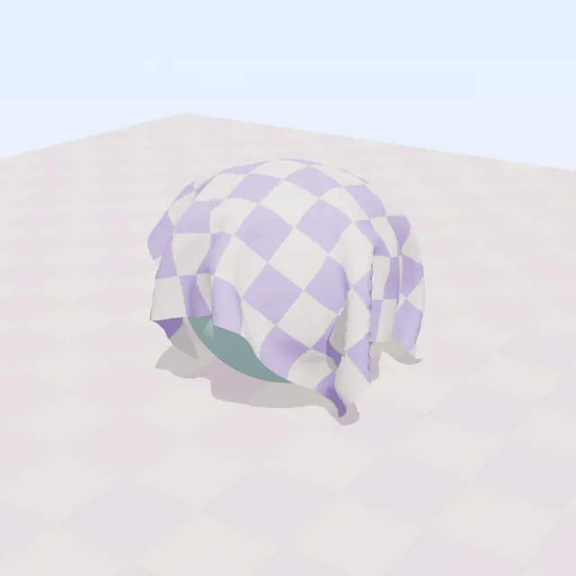
Problem. CT and MRI scanners produce 3D grids of scalar samples with no surface representation, which polygon renderers cannot display, and clinicians needed images of bone and tissue.
Marching cubes (1987, William Lorensen and Harvey Cline, General Electric (GE)) extracted triangle surfaces from volume data (SIGGRAPH 1987). Direct volume rendering (1988) drew a volume without extracting a surface, in two papers of the same year: Marc Levoy at UNC (“Display of surfaces from volume data,” IEEE CG&A 8(3)) and Robert Drebin, Carpenter and Hanrahan at Pixar (“Volume rendering,” SIGGRAPH 1988).
Problem. Real objects and sites had to be modeled to a fraction of a millimeter, but a scanner sees one side at a time, so many partial, noisy, overlapping range images had to be aligned and merged into one closed surface; photographs give shape only where points can be matched across views.
Structured light (1982, Jeffrey Posdamer and Martin Altschuler) projected a sequence of coded stripe patterns, so each camera pixel decodes which stripe lit it and depth follows by triangulation (Computer Graphics and Image Processing 18(1), 1982). Laser-stripe triangulation scanners did the same with one swept line; the Stanford models were scanned with a Cyberware 3030 MS (Stanford 3D Scanning Repository). Zippered range scans (1994, Greg Turk and Marc Levoy, Stanford) stitched overlapping scans into one mesh (SIGGRAPH 1994); their test object was a terra-cotta rabbit, the Stanford bunny (Turk, “The Stanford Bunny”). Volumetric range merging (1996, Brian Curless and Levoy, Stanford) averaged signed distances from all scans on a grid and extracted the zero set by marching cubes (SIGGRAPH 1996); the Digital Michelangelo Project (2000, Levoy and colleagues, Stanford and the University of Washington) scanned ten statues by Michelangelo with these methods (SIGGRAPH 2000). Poisson surface reconstruction (2006, Michael Kazhdan, Matthew Bolitho and Hugues Hoppe, Johns Hopkins and Microsoft Research) fit a watertight surface to oriented points by solving one Poisson equation (Symposium on Geometry Processing (SGP) 2006).
From photographs, Facade (1996, Paul Debevec, Camillo Taylor and Jitendra Malik, UC Berkeley) fit parametric architectural models to a few photographs (SIGGRAPH 1996). Photo Tourism (2006, Noah Snavely, Steven Seitz and Richard Szeliski, University of Washington and Microsoft Research) recovered cameras and sparse points by structure from motion from unordered Internet photo collections (ACM TOG 25(3), 2006), and patch-based multi-view stereo (PMVS) (2010, Yasutaka Furukawa and Jean Ponce) grew dense oriented patches from the calibrated views (IEEE Transactions on Pattern Analysis and Machine Intelligence (TPAMI) 32(8), 2010). Structure from motion of this kind supplies the camera poses that NeRF and Gaussian splatting start from (Section 11).
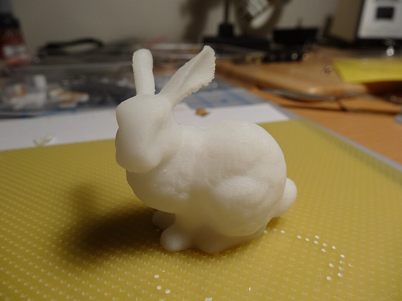
Problem. Hair and fur consist of many thousands of fibers, each thinner than a pixel and translucent, so neither surface shading models nor one sample per pixel can render it, and light scattered inside the fibers sets its color and highlights.
Volumetric fur (1989, James Kajiya and Timothy Kay, Caltech) rendered fur as a 3D texture of densities ray-traced through a volume, with a lighting model for thin cylinders (“Rendering fur with three dimensional textures,” SIGGRAPH 1989). The hair scattering model (2003, Stephen Marschner, Henrik Wann Jensen, Mike Cammarano, Steven Worley and Pat Hanrahan, Stanford) measured real fibers and modeled them as rough dielectric cylinders, which explained the two highlights of real hair, one white and one colored (“Light scattering from human hair fibers,” ACM TOG 22(3), 2003).
Problem. Technical illustration, cartoons and painting convey shape with outlines, hatching and limited palettes rather than with physically correct light, and a renderer had to produce such images from 3D models automatically.
Comprehensible rendering (1990, Takafumi Saito and Tokiichiro Takahashi, Nippon Telegraph and Telephone (NTT) Human Interface Laboratories) stored depth and normals per pixel, the geometric buffers of later deferred shading, and drew outlines and hatching from them as image-processing passes (“Comprehensible rendering of 3-D shapes,” SIGGRAPH 1990). Pen-and-ink illustration (1994, Georges Winkenbach and David Salesin, University of Washington) built tones from prioritized strokes of hatching (SIGGRAPH 1994). Gooch shading (1998, Amy Gooch, Bruce Gooch, Peter Shirley and Elaine Cohen, Utah) replaced dark shadows by a cool-to-warm color ramp so that shape stays readable in technical illustration (“A non-photorealistic lighting model for automatic technical illustration,” SIGGRAPH 1998).
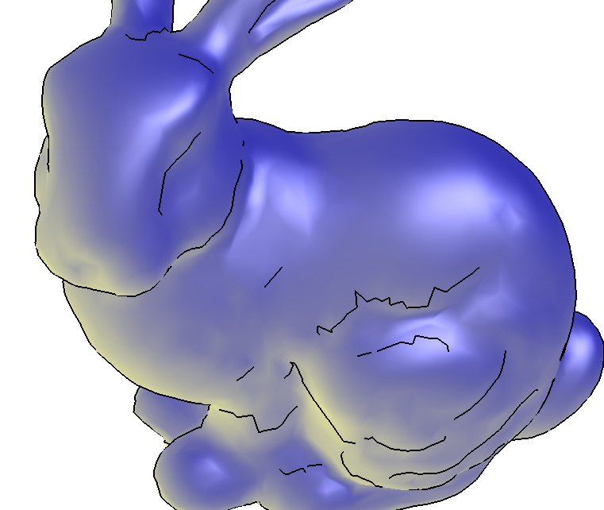
Problem. Hand-built models and lights could not reproduce the look and lighting of real scenes, so new views and illumination had to come from photographs: views rendered from captured rays instead of geometry, and light measured instead of designed.
Light field rendering (1996, Levoy and Pat Hanrahan, Stanford) rendered new views from a 4D table of rays with no geometry (SIGGRAPH 1996). High-dynamic-range (HDR) radiance maps (1997, Paul Debevec and Jitendra Malik, UC Berkeley) recovered real light levels from a bracket of exposures (SIGGRAPH 1997), and image-based lighting (1998, Debevec) lit computer-generated objects with captured light (SIGGRAPH 1998). Modeling from photographs (Facade) is under 3D scanning and reconstruction, above.
Problem. Real-time 3D needed hardware a household could buy, and once that existed its fixed-function pipeline evaluated only built-in lighting and texturing, so the custom materials of film rendering could not run at game frame rates.
The Voodoo card (1996, 3dfx Interactive) accelerated only “the inner rasterization loop” and left the rest to the host (its specification). The GeForce 256 (NVIDIA, announced 31 August 1999 as “the world’s first graphics processing unit (GPU)”) put transform and lighting on the same chip as the rasterizer, rated at “15 million sustained polygons per second” (press releases). The GeForce3 (unveiled 22 February 2001) ran a user-programmable vertex engine (Erik Lindholm, Mark Kilgard and Henry Moreton, NVIDIA, SIGGRAPH 2001), and ATI’s Radeon 9700 (2002) made the pixel stage programmable in floating point.
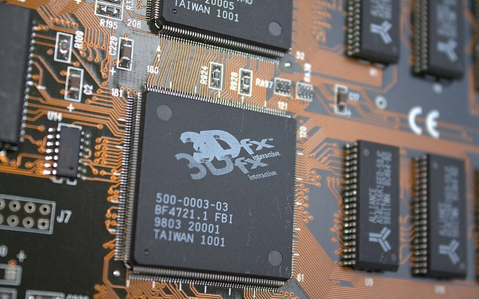
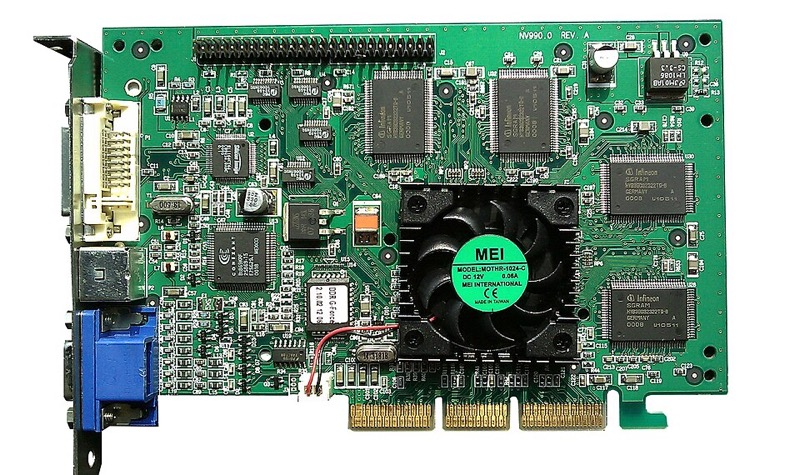
Problem. The GPU had become the cheapest parallel arithmetic machine available, but computations other than rendering had to be disguised as graphics operations to run on it.
Brook for GPUs (2004, Ian Buck, Hanrahan and colleagues, Stanford) treated the GPU as a stream computer (SIGGRAPH 2004). NVIDIA’s CUDA (Compute Unified Device Architecture) programming guide 1.0 is dated 23 June 2007, on the unified Tesla architecture first sold in the GeForce 8800 of November 2006 (Lindholm et al., 2008; the programming model in Nickolls, Buck, Garland and Skadron, ACM Queue, 2008). The 2012 AlexNet network was trained on two consumer gaming GPUs, NVIDIA GTX 580s (Krizhevsky, Sutskever and Hinton, “ImageNet classification with deep convolutional neural networks,” Neural Information Processing Systems (NeurIPS) 2012; CACM reprint).
Problem. Ad hoc material parameters, neither energy-conserving nor fit to measured reflectance, had to be retuned for each lighting setup; studios needed physically based materials controlled by a few artist-friendly parameters.
The Disney principled BRDF (2012, Brent Burley, Walt Disney Animation Studios) fit a few artist-friendly parameters to measured materials and was used on Wreck-It Ralph (“Physically-based shading at Disney,” SIGGRAPH 2012 course). Real-time physically based rendering (PBR) (2013, Brian Karis, Epic Games) ran the same kind of model inside a game frame (“Real shading in Unreal Engine 4,” SIGGRAPH 2013 course).
Problem. Reyes rendering relied on approximations (shadow maps, caches) that made lighting slow to set up; path tracing needs none but was too noisy and slow for film-scale scenes.
Arnold (Marcos Fajardo; Solid Angle with Sony Pictures Imageworks) rendered Monster House (2006), reported as the first feature rendered with path tracing (Georgiev et al., “Arnold: a brute-force production path tracer,” ACM TOG 37(3), 2018). Hyperion (Walt Disney Animation Studios) rendered Big Hero 6 (2014; TOG 2018), and RenderMan’s path tracer (Per Christensen and colleagues, Pixar) rendered Finding Dory (2016), the first Pixar feature path-traced throughout (TOG 2018).
Problem. In a 16 ms game frame, programmable GPU cores could trace only a few rays per pixel, and Monte Carlo estimates from so few samples are too noisy to display.
Spatiotemporal variance-guided filtering (SVGF) (2017, Christoph Schied and colleagues) denoised images of one sample per pixel (High Performance Graphics (HPG) 2017). Microsoft announced DirectX Raytracing (DXR) on 19 March 2018. NVIDIA’s Turing architecture, announced on 13 August 2018, added “dedicated ray-tracing processors called RT Cores” delivering “up to 10 GigaRays a second,” and the consumer GeForce RTX cards followed on 20 August 2018 (NVIDIA press releases). Whitted’s 74-minute frame now runs at interactive rates on a consumer card (Exercise 10).
Which stages of the graphics pipeline ran as host software and which were built into hardware changed with the price of hardware.
Across periods, stages move from host software into fixed hardware, then become programmable, then merge into one programmable pool, while new fixed-function units keep appearing beside the pool (texture filtering, ray-tracing cores, tensor cores). Blythe describes the recurring cycle as “early use of fixed-function hardware acceleration to produce a cost-effective solution, followed by replacement with a more flexible interface” (Blythe, “Rise of the graphics processor,” Proc. IEEE 96(5), 2008), and Myer and Sutherland had already described display processors growing into general computers and starting over, the “wheel of reincarnation” (“On the design of display processors,” CACM 11(6), 1968).
The host builds a display list; a display processor reads it over and over to refresh a vector CRT, and a line generator strokes each segment. Blythe places the first commercial terminals with autonomous display processing and hardware line drawing in the mid-1960s, citing IBM’s 1964 guide to the 2250; each vendor had its own display-list instructions. The clipping divider and the head-mounted display’s matrix multiplier (1968), and then the LDS-1 (1969), moved transformation and clipping into hardware.
Every stage from transformation to writing pixels is host software; the only graphics hardware is the frame buffer (Section 5), its color map and the video output. SuperPaint (1973) and the E&S frame buffers at NYIT with Smith’s Paint programs (1975 to 1977) are the examples. There was no standard interface.
Clark’s Geometry System used twelve copies of one chip, each set by a register to one of twelve roles: four for the matrix transformation, four to six for clipping, two for scaling to device coordinates. Its rate was “equivalent to 5 million floating-point operations per second, corresponding to a fully transformed, clipped, scaled coordinate each 15 microseconds” (Clark 1982). Akeley’s later taxonomy calls this the first generation: transformed, flat-shaded points, lines and polygons, no lighting, hidden surfaces left to the application (Akeley 1993). Software used SGI’s own interface, IRIS GL.
The GT split the pipeline into four subsystems, geometry, scan conversion, raster and display, and did lighting, Gouraud shading and depth buffering in hardware: “100,000 lighted, 4-sided polygons per second” and 400,000 vectors a second (Akeley and Jermoluk 1988).
The RealityEngine’s target was “lighted, smooth shaded, depth buffered, texture mapped, antialiased triangles.” A Command Processor fed 6, 8 or 12 Geometry Engines, each an Intel i860XP, which did transformation, lighting, clipping, projection and setup; Fragment Generators rasterized and textured; 80 Image Engines did the per-pixel work; up to 353 processors in all, for over a million antialiased, textured triangles and over 240 million pixels a second. The Command Processor exists “primarily” because OpenGL is modal (Akeley 1993). OpenGL 1.0, SGI’s interface made an open standard, dates from 1992. InfiniteReality (1996) reached over 7 million lighted, textured, antialiased triangles and 710 million pixels a second with a 60 Hz design goal, in a sort-middle architecture (Montrym, Baum, Dignam and Migdal, SIGGRAPH 1997); the sorting classes come from Molnar, Cox, Ellsworth and Fuchs, 1994. Blythe notes that such accelerators were usually built from programmable parts whose programmability the vendor used “solely to create firmware that implemented the fixed-function pipeline”.
The 3dfx Voodoo did only the back half. The host computed transformation, lighting, clipping and even the triangle setup (“the host provides starting RGBA and delta RGBA information”); the card walked the spans, interpolated color, did perspective-correct texturing with filtering, fog, a 16-bit depth buffer and blending, at a peak of 50 million pixels a second (SST-1 specification, 1995). The Voodoo2 (1998) moved setup into hardware. Programs used 3dfx’s own Glide or Direct3D.
The GeForce 256 put the whole fixed-function pipeline on one chip: “Integrated Transform Engine, Integrated Lighting Engine and a 256-bit Rendering Engine on a Single Chip” (NVIDIA, 1999). NVIDIA’s later description is “a fixed-function 32-bit floating-point vertex transform and lighting processor and a fixed-function integer pixel-fragment pipeline” (Lindholm et al., 2008). Direct3D 7 exposed it.
The vertex stage became an application program on the GeForce3, “embedded in the broader fixed function pipeline” (Lindholm, Kilgard and Moreton 2001); the pixel stage became programmable in floating point on the Radeon 9700 (2002). Before this, flexibility came from many passes through the fixed pipeline (Peercy, Olano, Airey and Ungar, SIGGRAPH 2000). Setup, rasterization and raster operations stayed fixed.
The Xbox 360’s graphics processor (2005) had “48 parallel unified shaders” and 10 MB of embedded DRAM (Andrews and Baker, Hot Chips 2005), and NVIDIA’s GeForce 8800 (8 November 2006) had 128 stream processors at 1.35 GHz, each assigned to vertex, pixel or geometry work as needed (NVIDIA technical brief). Direct3D 10 added a programmable geometry stage and stream output, and removed from its core every fixed function a shader can express (Blythe, “The Direct3D 10 system,” SIGGRAPH 2006). The same processors ran CUDA programs from 2007, and the Khronos Group released the Vulkan 1.0 interface on 16 February 2016.
The raster pipeline of the previous period remains, with three additions. Fixed-function RT cores: “The SM only has to launch a ray probe, and the RT core does the BVH traversal and ray-triangle tests” (NVIDIA Turing whitepaper, 2018), about 10 billion rays a second against about 1.1 billion in software on the previous generation. Tensor cores for the matrix arithmetic of neural networks, used for upscaling and frame generation (Section 11). And task and mesh shaders, which can replace the vertex front end with a compute-style stage. DirectX 12 Ultimate (19 March 2020) collected these features.
In this text: the pipeline’s stages are the viewing chapter and the rasterization chapter; the programmable stages in practice, shaders in GLSL; ray traversal, the ray-tracing chapter.
Three series, in 2026 dollars, for the hardware of Sections 5 to 7. Their definitions differ (polygons or triangles, lit or unlit, peak or measured, a card or a whole workstation), so the ratios between periods are orders of magnitude, not precise values.
Display memory has always cost more per megabyte than ordinary memory: about six times in 1975 (the E&S frame buffer against the cheapest RAM), 4 to 18 times for the PC cards of 1981 to 1987; in 2025 a card’s memory, with its processor, cost about $0.061 a megabyte against about $0.0016 for desktop DRAM in 2023 (McCallum). The premium once bought video-rate scan-out; now it also buys a processor.
A frame of a feature passes through departments in a fixed order: capture of motion, shape and light; layout and previsualization; animation; effects simulation; lighting; rendering on a farm of computers, now with a production path tracer and a denoiser; rendering in layers; compositing with the over operator; and color management in linear light. The course’s film-pipeline lecture works the compositing and exposure arithmetic by hand; see also the Pixar in a Box lessons by Pixar and Khan Academy. This offline pipeline differs from a game’s in its frame budget (Section 12).
Film paid for many of the rendering methods in this chapter. A feature demands thousands of frames at film resolution, free of aliasing, with motion blur and believable light, on a schedule; the studios that met those demands wrote many of the field’s papers and much of its production software.
The first commercial computer-generated imagery (CGI) came from a few companies that built the whole chain themselves, from renderer to film recorder, and lived mostly on television commercials. Information International Inc. (III), a maker of image scanners, made the pixelated robot’s-eye view of Westworld (1973), generally cited as the first digital image processing in a feature film, with John Whitney Jr. and Gary Demos. MAGI (Mathematical Applications Group Inc.) had written a ray-casting program to compute nuclear radiation exposure and turned it into SynthaVision, one of the first ray-traced image renderers. For Disney’s Tron (1982), the first feature to use 3D CG extensively, four of these studios (MAGI, III, Robert Abel and Associates, and Digital Effects) divided the work. Whitney and Demos then founded Digital Productions around a Cray supercomputer and rendered about 25 minutes of spaceships for The Last Starfighter (1984). The cost of such machines outran the business: Omnibus Computer Graphics bought Digital Productions and Abel in 1986 and all three closed in 1987. Their staff founded the next generation, including Rhythm & Hues and Side Effects Software (SideFX), maker of Houdini.
George Lucas founded Industrial Light & Magic (ILM) in 1975 for Star Wars, and in 1979 hired Edwin Catmull from the New York Institute of Technology (NYIT) lab to start a computer division. Its papers defined 1980s rendering: particle systems, the A-buffer, distributed ray tracing, shade trees, alpha compositing and the Reyes architecture. Its first film work, the Genesis sequence of Star Trek II (1982), was one of the earliest entirely computer-generated sequences in a feature, made with fractal terrain and particle systems. In 1986 Steve Jobs paid $5 million for the division’s technology and put $5 million more into the company it became, Pixar. Pixar sold hardware and the RenderMan renderer while John Lasseter’s group made shorts; Toy Story (1995) was the first feature made entirely with computer animation. Disney bought Pixar in 2006 and Lucasfilm, with ILM, in 2012. ILM, meanwhile, carried CG into live action: the stained-glass knight of Young Sherlock Holmes (1985), the water creature of The Abyss (1989), the T-1000 of Terminator 2 (1991) and the dinosaurs of Jurassic Park (1993).
Disney’s own move to computers began with CAPS, built with Pixar, which replaced hand inking, painting and camera work with digital ink, paint and compositing; The Rescuers Down Under (1990) was made entirely with it, and it set the drawn characters of Beauty and the Beast (1991) in a 3D ballroom. Walt Disney Animation Studios later wrote its own path tracer, Hyperion, used for every film since Big Hero 6 (2014). Pacific Data Images (PDI), founded in 1980 for television graphics, made Antz (1998) and Shrek (2001), the first winner of the Academy Award for Best Animated Feature, as PDI/DreamWorks. Blue Sky Studios, founded in 1987 by MAGI veterans, built a ray tracer with physically based light and made Ice Age (2002); Disney closed it in 2021. Illumination (with Mac Guff in Paris) and Animal Logic in Sydney followed.
By the 1990s visual effects (VFX) were spread across many houses, most founded by ILM or Abel veterans. Digital Domain (1993) built the ship and digital passengers of Titanic (1997) and the aged face of Benjamin Button (2008). Weta Digital (1993, now Wētā FX) wrote Massive for the crowds of The Lord of the Rings, built Gollum from Andy Serkis’s performance, and captured performances under water for Avatar: The Way of Water (2022). Sony Pictures Imageworks co-developed Arnold, which rendered Monster House (2006), the first feature rendered with path tracing; by 2016 Disney and Pixar had moved to path tracers too. Framestore lit the actors of Gravity (2013) with light-emitting diode (LED) panels showing the rendered scene, and Double Negative traced light through curved spacetime for the black hole of Interstellar (2014). ILM’s StageCraft LED volume for The Mandalorian (2019) put game-engine rendering in front of the camera.
Three things recur. Studios wrote renderers when none existed at their scale: Reyes and RenderMan at Lucasfilm and Pixar, CGI Studio at Blue Sky, Arnold at Sony Pictures Imageworks with Solid Angle, Hyperion at Disney, Manuka at Weta. Their tools became products: Wavefront was co-founded by Abel’s programmer Bill Kovacs; Alias and Wavefront merged into the company that shipped Maya (1998); Houdini came from the Omnibus collapse; and RenderMan became, in 2001, the first software package to receive an Oscar statuette. And their researchers published: particle systems, compositing algebra, subdivision surfaces in production, the material point method for snow in Frozen (2013) and Disney’s principled reflectance model all appeared first as SIGGRAPH papers or courses written inside studios.
Each “first” is stated as narrowly as the sources allow; several popular claims are disputed and are discussed in the supplement.
| year | film | studio | first or landmark |
|---|---|---|---|
| 1973 | Westworld | III | digital image processing in a feature (the pixelated robot view) |
| 1976 | Futureworld | III; Catmull, Parke | among the first 3D CG images in a feature (an animated hand and face) |
| 1982 | Tron | MAGI, III, Abel, Digital Effects | first extensive use of 3D CG in a feature |
| 1982 | Star Trek II | Lucasfilm Computer Division | Genesis sequence: one of the earliest all-CG sequences; particle systems |
| 1984 | The Last Starfighter | Digital Productions | CG spaceships in place of models, rendered on a Cray |
| 1985 | Young Sherlock Holmes | ILM, Lucasfilm | stained-glass knight, cited as the first all-CG character in a feature |
| 1989 | The Abyss | ILM | water pseudopod: a refracting CG creature in live action |
| 1990 | The Rescuers Down Under | Disney (CAPS) | first feature made entirely with digital ink, paint and compositing |
| 1991 | Terminator 2 | ILM | liquid-metal T-1000: a lead character made partly with CG |
| 1993 | Jurassic Park | ILM | photoreal CG animals in live action |
| 1995 | Toy Story | Pixar | first feature made entirely with computer animation |
| 2002 | The Two Towers | Weta Digital | Gollum from captured performance; Massive crowd agents |
| 2006 | Monster House | Sony Pictures Imageworks | first feature rendered with path tracing (Arnold) |
| 2014 | Interstellar | Double Negative | black hole rendered through curved spacetime (DNGR), published as physics |
| 2019 | The Mandalorian (series) | ILM | StageCraft LED volume: real-time rendered backgrounds filmed in camera |
Studios and films, in full: every studio above with its founders, landmark work, technical contributions and fate, the software that came out of the studios, and a timeline of 37 films.
Since about 2020 trained neural networks have replaced parts of the pipeline.
A learned scene needs no modeled geometry, no hand-set materials and no light-transport solver; an upscaler or a frame generator supplies pixels the renderer never computed; a diffusion model draws an image from text. Each earlier change of representation (lines, then polygons, patches, micropolygons, scanned points, volumes) added a representation without removing the others, and the new methods use the old machinery: a camera matrix projects a Gaussian as it projects a vertex, and splatting is rasterization.
In this text: neural networks and embeddings; the space of images; diffusion models; learned scenes (NeRF, splats and the volume integral).
Techniques reach routine use years after publication. For the ten techniques in the figure below the gap runs from 3 years (radiance fields to real-time splats) to 48 (the head-mounted display).
One mechanism is price (Section 8). An algorithm written for an overnight run on a minicomputer becomes practical when the hardware budget it needs falls by the ratio between the two. Display memory halved in price about every 2.0 years from 1975 to 2025; a factor of a thousand is about ten halvings, about 20 years, which is close to the median lag. The research literature of a given year describes much of what will be routine two decades later, and the mathematics underneath (vectors, matrices, sampling, integrals) is the same in every period, so it does not go out of date.
An interactive program must finish each frame in the time the display gives it: at 60 frames a second, about 16.7 milliseconds, every frame. This is real-time rendering. A film frame has no viewer waiting; it may take minutes or hours on a farm and be played back later. This is offline rendering. A four-hour film frame allows about 860,000 times the computation of a 60 Hz game frame, and Whitted’s 74-minute frame of 1980 about 270,000 times. Almost every technique in this chapter was first used on the offline side and later crossed to the real-time side, once hardware closed enough of that ratio: shading programs, ray tracing, physically based materials and path-traced light all made the crossing, and the lag figure above measures it.
The organizations behind the work in Sections 1 to 11, with a founding year where a source states it.
| Organization | Founded | Contributions in this chapter | Key people |
|---|---|---|---|
| University departments and laboratories | |||
| MIT (Lincoln Laboratory, Project MAC) | Sketchpad and hidden-line removal on the TX-2 (1963, 3, 4); the Coons patch (1967, supplement) | Ivan Sutherland, Lawrence Roberts, Steven Coons | |
| Harvard | Head-mounted display and clipping divider (1968, 3, 4) | Ivan Sutherland, Robert Sproull | |
| University of Utah, Computer Science | David Evans was recruited in 1965 to build a department concentrated on graphics, funded by ARPA’s Information Processing Techniques Office; Sutherland joined in 1968 and the two founded Evans & Sutherland that year (Carlson). Z-buffer and texture mapping (1974, 4, 4); Gouraud and Phong shading (1971, 1975, 4); Blinn’s reflection models and bump mapping (1977, 1978, 4); Loop subdivision (1987, 4); Gooch shading (1998, 6) (more) | David Evans, Ivan Sutherland, Edwin Catmull, Jim Blinn | |
| Cornell Program of Computer Graphics | Cook-Torrance model (1982, 4); radiosity, hemicube, progressive refinement (1984 to 1988, 6); image-based BRDF measurement (1999, 4) | Donald Greenberg, Kenneth Torrance, Michael Cohen, Stephen Marschner | |
| Stanford (Computer Graphics Laboratory and Computer Science) | k-d tree (1975, 4); Geometry Engine (1982, 6); zippered and volumetric range merging, Digital Michelangelo (1994 to 2000, 6); light fields (1996, 6); multiple importance sampling (1995, 6); QSplat (2000, 6); particle level set (2002, 6); hair scattering (2003, 6); Brook for GPUs (2004, 6) | Marc Levoy, Pat Hanrahan, Leonidas Guibas, Ronald Fedkiw | |
| University of North Carolina (UNC) at Chapel Hill | Points as a display primitive (1985, 6); direct volume rendering (1988, 6); reaction-diffusion textures (1991, 6) | Henry Fuchs, Turner Whitted, Marc Levoy, Greg Turk | |
| Caltech | Rendering equation (1986, 6); elastically deformable models (1987, 6); fur as volume texture (1989, 6); cellular texture generation (1995, 6) | James Kajiya, Alan Barr, Kurt Fleischer | |
| UC Berkeley | Level set method (1988, with UCLA, 6); Facade (1996, 6); HDR radiance maps and image-based lighting (1997, 1998, 6); texture synthesis and image quilting (1999, 2001, 6); NeRF (2020, 11) | James Sethian, Paul Debevec, Jitendra Malik, Alexei Efros | |
| University of Washington | Pen-and-ink illustration (1994, 6); Digital Michelangelo, with Stanford (2000), and Photo Tourism, with Microsoft Research (2006, 6) | David Salesin, Brian Curless, Steven Seitz, Noah Snavely | |
| Carnegie Mellon University | Quadric error metrics (1997, 4) | Michael Garland, Paul Heckbert | |
| ETH Zurich | Procedural cities (2001) and CGA shape (2006, 4); surface splatting, with MERL (2001, 6) | Markus Gross, Pascal Müller, Matthias Zwicker, Luc Van Gool | |
| New York Institute of Technology (NYIT) Computer Graphics Lab | Shadow maps (1978, 4); mipmaps (1983, 4) | Edwin Catmull, Alvy Ray Smith, Lance Williams | |
| New York University (NYU) | Perlin noise (1985, 6) | Ken Perlin | |
| University of Cambridge | Painter’s algorithm (1972, 4) | Martin Newell, Richard Newell, Tom Sancha | |
| Syracuse University | Rational B-splines (1975, 4) | Kenneth Versprille | |
| Yale | Shamos’s computational geometry (1975 to 1978, 4) | Michael Shamos | |
| University of Rochester, Production Automation Project | PADL and constructive solid geometry (1977 to 1980, 4) | Herbert Voelcker, Aristides Requicha | |
| University of Texas at Dallas | BSP trees (1980, 4) | Henry Fuchs, Zvi Kedem, Bruce Naylor | |
| Simon Fraser University | Sensor motion capture (1980, 1982, 4) | Tom Calvert | |
| University of Regina | L-system plant models (1988) and The Algorithmic Beauty of Plants (1990, 4) | Przemyslaw Prusinkiewicz | |
| University of California, Los Angeles (UCLA) | Level set method (1988, with UC Berkeley, 6) | Stanley Osher | |
| University of Wisconsin-Madison | Motion graphs (2002, 4) | Lucas Kovar, Michael Gleicher | |
| Johns Hopkins University | Poisson surface reconstruction (2006, with Microsoft Research, 6) | Michael Kazhdan, Matthew Bolitho | |
| Research institutes and corporate laboratories | |||
| Bell Labs | Recursive ray tracing (1980, 4) | Turner Whitted | |
| SRI (Augmentation Research Center) | Mouse and NLS (1968, 3) | Douglas Engelbart | |
| RAND Corporation | RAND Tablet (1964, 3) | Malcolm Davis, Thomas Ellis | |
| Xerox PARC | SuperPaint frame buffer (1973, 5); quad-edge structure, with Stanford (1985, 4) | Richard Shoup, Leonidas Guibas, Jorge Stolfi | |
| National Bureau of Standards (NBS, now NIST) | Definition of the BRDF (1977, 4) | Fred Nicodemus | |
| NASA Jet Propulsion Laboratory | Blobby models (1982, 6) | Jim Blinn | |
| Lawrence Berkeley Laboratory | Measured anisotropic reflection (1992, 4) | Greg Ward | |
| Microsoft Research | Progressive meshes (1996, 4); Photo Tourism and Poisson reconstruction (2006, 6) | Hugues Hoppe, Richard Szeliski | |
| Mitsubishi Electric Research Laboratories (MERL) | Surface splatting, with ETH Zurich (2001, 6); MERL BRDF database (2003, 4) | Hanspeter Pfister, Matthew Brand | |
| Inria and the Max Planck Institute for Informatics (MPI-Inf) | 3D Gaussian splatting (2023, 11) | George Drettakis, Bernhard Kerbl, Thomas Leimkühler | |
| General Electric (GE) | Marching cubes (1987, 6) | William Lorensen, Harvey Cline | |
| General Motors Research Laboratories (manufacturer) | DAC-1 (earlier machines) | ||
| Boeing (manufacturer) | The 777, digitally designed (entered service 1995, 2); the term “augmented reality” (1992, 2) | Thomas Caudell, David Mizell | |
| Renault and Citroën (manufacturers) | De Casteljau’s algorithm at Citroën (1959); Bézier curves and UNISURF at Renault (1971 to 1972, 4) | Paul de Faget de Casteljau, Pierre Bézier | |
| Hardware companies | |||
| IBM | IBM 2250 (1964, 3); Bresenham’s line algorithm (1965, 4); ray casting (1968, 4); Mandelbrot’s fractals (1977 to 1982, 4) | Jack Bresenham, Arthur Appel, Benoit Mandelbrot | |
| Digital Equipment Corporation (DEC) | PDP-1 and the Type 30 display (1960 to 1962, 3) | ||
| Tektronix | Storage-tube terminals, T4002 (1969) and 4010 (3) | ||
| Evans & Sutherland (E&S) | LDS-1 (1969, 3); frame buffer (1975, 5); flight-simulator image generators (2) | David Evans, Ivan Sutherland | |
| Silicon Graphics (SGI) | IRIS 1000 terminal (1983); GT (1988); RealityEngine (1993) (6, 7) | Jim Clark, Kurt Akeley | |
| 3dfx Interactive | Voodoo (1996, 6) | ||
| ATI Technologies | Radeon 9700, floating-point pixel shading (2002, 6) | ||
| NVIDIA (with NVIDIA Research) | 1993 | GeForce 256 (1999) and GeForce3 (2001, 6); CUDA (2007, 6); Turing RT cores (2018, 6); Instant neural graphics primitives (2022, 11) | Jensen Huang, Erik Lindholm, Thomas Müller |
| Cyberware | Laser triangulation scanner (3030 MS) of the Stanford models (6) | ||
| Oxford Metrics (Vicon) | 1984 | Vicon optical motion capture (first system 1979, 4) | |
| Software companies and projects | |||
| Dassault Systèmes | CATIA (1981, 2) | ||
| SideFX | 1987 | PRISMS (1987) and Houdini (4) | Kim Davidson, Greg Hermanovic |
| Alias|Wavefront | Stable fluids (1999, 6) | Jos Stam | |
| CGAL Project | Computational Geometry Algorithms Library (from 1996, 4) | Andreas Fabri, Lutz Kettner, Stefan Schirra | |
| Microsoft | DirectX Raytracing (2018, 6) | ||
| Solid Angle | Arnold path tracer (Monster House, 2006, 6) | Marcos Fajardo | |
| Epic Games | Real-time PBR in Unreal Engine 4 (2013, 6) | Brian Karis | |
| Studios | |||
| Lucasfilm Computer Division | Formed in 1979 and spun off as Pixar in 1986, when Steve Jobs bought it (CHM, Carlson). Particle systems (1983, 6); A-buffer (1984, 4); distributed ray tracing (1984, 4); alpha compositing (1984, 6); shade trees (1984, 6) | Edwin Catmull, Alvy Ray Smith, Robert Cook, Loren Carpenter | |
| Pixar | Before its films Pixar sold the Pixar Image Computer (1986). Reyes and percentage-closer filtering (1987, 6, 4); RenderMan Shading Language (1990, 6); Toy Story (1995, 2); subdivision in production (1998, 4); path-traced Finding Dory (2016, 6) (more) | Edwin Catmull, Robert Cook, Pat Hanrahan, Tony DeRose | |
| Industrial Light & Magic (ILM) | Particle level set water, with Stanford (2002, 6) | Douglas Enright, Ronald Fedkiw | |
| Pacific Data Images (PDI) and DreamWorks Animation | Level sets with particles for liquids (2001); VDB and OpenVDB (2013) (6) | Nick Foster, Ken Museth | |
| Walt Disney Animation Studios | Disney principled BRDF (2012, 6); Hyperion, Big Hero 6 (2014, 6) | Brent Burley | |
| Sony Pictures Imageworks | Arnold in production, Monster House (2006, 6) | ||
| Funding agencies | |||
| ARPA Information Processing Techniques Office (IPTO) | RAND Tablet (1964), head-mounted display (1968) (3, 3); the Utah program (above) | ||
| Office of Naval Research (ONR) | Head-mounted display (1968, 3) | ||
| National Science Foundation (NSF) | The ViSC report on scientific visualization (1987, 1) | ||
| Venues | |||
| ACM SIGGRAPH conference | 1974 | Most papers of Sections 4 and 6 | |
| ACM Transactions on Graphics (TOG) | 1982 | Cook-Torrance in its first issue (1982, 4); publishes the SIGGRAPH papers | |
| Communications of the ACM (CACM) | Phong (1975), Clark (1976), Crow (1977), Whitted (1980) (4, 4, 4, 4) | ||
| Eurographics, Computer Graphics Forum (CGF) and the Symposium on Rendering (EGSR) | 1982 (CGF) | Photon mapping (1996, 6); image-based BRDF measurement (1999, 4); Poisson reconstruction at the Symposium on Geometry Processing (2006, 6) | |
| IEEE Computer Graphics and Applications (CG&A) | 1981 | Calvert’s motion capture (1982, 4); Levoy’s volume rendering (1988, 6) | |
| High Performance Graphics (HPG) | SVGF denoising (2017, 6) | ||
| Vision and learning conferences (ICCV, ECCV, CVPR, NeurIPS) | Efros-Leung synthesis (ICCV 1999); AlexNet (NeurIPS 2012); NeRF (ECCV 2020); latent diffusion (CVPR 2022) (6, 6, 11) | ||
A companion page, People and organizations, lists 212 people and 115 organizations with 352 dated contributions and 70 honors, each contribution linked to its source, filterable by period, by kind of organization and by the problems of Sections 4 and 6. Organizations it lists without a contribution in this chapter are named in the supplement.
Papers are linked by DOI (digital object identifier) or arXiv number; the ACM Digital Library opens SIGGRAPH papers from most university networks.
The full list of sixty papers by theme, and free software for trying the techniques, are in Reading and software.
Grouped by subject; free official editions are linked and listed first.
Foundations and general texts.
Rendering.
Real time.
Geometry and modeling.
Animation and simulation.
Vision and imaging.
Deep learning.
History.
Societies and archives. ACM SIGGRAPH; the SIGGRAPH History Archives (conference histories, award citations, art and animation archives); the ACM Digital Library’s SIGGRAPH and TOG pages (mostly paywalled; SIGGRAPH content is free for about a month around each conference); the Eurographics Digital Library; the Computer History Museum collections and its oral histories with pioneers; Bitsavers, scanned manuals of historic machines (E&S, DEC, IBM); Alvy Ray Smith’s site, first-hand history of paint systems, alpha and Pixar.
Finding papers. Ke-Sen Huang’s paper lists, links to author copies of SIGGRAPH, Eurographics, EGSR and HPG papers; arXiv cs.GR, where learned graphics appears first; Hugging Face Papers, where Papers With Code now redirects; the Self Shadow archive of the SIGGRAPH physically based shading course notes.
Learning. Ray Tracing in One Weekend (three short books, CC0); pbr-book.org; Scratchapixel; LearnOpenGL; WebGL Fundamentals and WebGL2 Fundamentals; The Book of Shaders; Shadertoy; Inigo Quilez’s articles on distance functions and noise; The Graphics Codex; the Real-Time Rendering site and its ray tracing resources; GPU Gems online; ACM SIGGRAPH on YouTube (talks and the Electronic Theater); Two Minute Papers, short summaries of recent papers (read the papers).
Assets. Poly Haven (HDR environments, textures and models, all CC0); the Stanford 3D Scanning Repository (the bunny, dragon and Buddha; free for research, not for commercial use); the McGuire Computer Graphics Archive (classic test scenes; per-model licenses); the Khronos glTF Sample Assets.
Prices in 2026 dollars use the CPI-U conversion in the note at the start of Section 3.
Next: the vectors chapter.